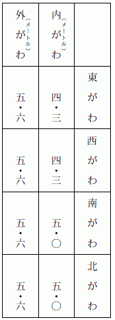
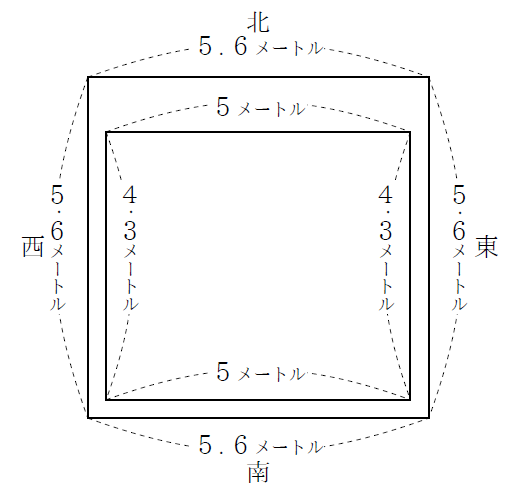

Aozora work 057109
Public-domain Japanese literature
塔上の奇術師
とうじょうのきじゅつし
- First published
- 「少女クラブ」講談社、1958（昭和33）年1月号～12月号
- Aozora release
- Orthography
- 新字新仮名
- Edition
- 塔上の奇術師／鉄人Ｑ
- Publisher
- 江戸川乱歩推理文庫、講談社
- Source
- Aozora Bunko card
Learner profile
Difficulty statistics
27out of 100
Model blue-sora-difficulty-v1 · status: ok
- Words
- 38,250
- Characters
- 73,956
- Sentences
- 2,665
- Average sentence
- 14.3 words
- Unique words
- 2,384
- Unique kanji
- 530
- Single-use words
- 916 · 38.4%
- Single-use kanji
- 101
- Lexical rarity
- 18.8 · weight 55%
- Kanji rarity
- 47.3 · weight 25%
- Sentence complexity
- 26.7 · weight 20%
- Lexical surprisal
- 2.563
- Kanji surprisal
- 2.683
Online reader
Read here
ふしぎな時計塔#
ある夕がた、名探偵明智小五郎の少女助手、花崎マユミさんは、中学一年のかわいらしい少女ふたりと手をとりあって、さびしい原っぱを歩いていました。
畑があったり、林があったり、青い草でふちどられた小川がながれていたり、その上にむかしふうの土橋がかかっていたりして、まるで、いなかのようなけしきですが、ここは、いなかではなく、東京都世田谷区のはずれなのです。
マユミさんにつれられているふたりの少女は、淡谷スミ子と森下トシ子という、おなじ中学の同級生で、淡谷さんのおうちがこの近くにあるので、きょうはマユミねえさまと森下トシ子ちゃんをおまねきして、三人で、この原っぱへさんぽに出たのです。
スミ子ちゃんもトシ子ちゃんも算数がとくいで、ものごとを、すじみちをたてて考えることがすきでした。
ですから、読みものとしては、探偵小説がすきなのです。悪人が、いろいろなトリックをつかってだまそうとするのを、知恵の力でみやぶるのが、おもしろくてたまらないのでした。
それに、スミ子ちゃんもトシ子ちゃんも、スポーツがとくいで、同級の男の子たちにも負けないくらい、かっぱつな少女でしたから、どうかして、マユミさんのような、少女探偵になりたいと思ったのです。
さいわい森下トシ子ちゃんのおねえさまが、マユミさんのお友だちを知っていましたので、そのおねえさまに紹介してもらって、なかよしの淡谷スミ子ちゃんといっしょにマユミさんをたずね、弟子にしてくださいと、もうしこんだのです。
「まあ、あなたがた、ゆうかんね。中学一年じゃ、まだはやいわ。それに、おとうさまやおかあさまが、おゆるしにならないでしょう？」
「いいえ、うちのおとうさまは、明智探偵のファンなのよ。その明智探偵の弟子のマユミさんの、またその弟子になるのですから、おとうさま、きっとゆるしてくださるわ。」
森下トシ子ちゃんがいいますと、淡谷スミ子ちゃんも口をそろえて、
「うちでは、ずっとまえに、宝石やお金がたびたびなくなることがあって、泥坊はうちのものかもしれないというので、警察にいわないで、明智先生に相談したことがあるんです。すると、明智先生がうちへいらしって、みんなをしらべて、すぐに犯人を見つけてくださったのよ。
うちのじいやに悪いむすこがあって、その人がぬすんでいたのです。じいやが、むすこをかばって、かくしていたので分からなかったの。
明智先生は、そのじいやのむすこによくいいきかせて、改心させてしまいなすったのよ。ですから、うちのおとうさまも、明智先生の大ファンなの、きっとゆるしてくださるわ。」
ふたりとも、一生けんめいにたのむものですから、マユミさんもこんまけして、明智探偵に相談したうえ、とうとうお弟子にすることを、しょうちしました。
しかし、それには、約束があったのです。学校の時間中は、けっして探偵のことを考えないこと、宿題をなまけないこと、あぶない事件や夜の事件には、つれていかないこと、そのほか、おとうさまやおかあさまを心配させないような、いろいろな約束をきめたのでした。
ふたりが、マユミさんのお弟子になってから、まだなにも事件がおこりません。ときどき、明智探偵事務所へマユミさんをたずねて、てがかりのみつけかたや、ふしぎな事件のなぞのときかたや、あぶないめにあったときに、身をまもる心がけなどをおそわっていました。
たびたび探偵事務所へいくので、明智探偵や小林少年ともしたしくなり、明智先生から、知恵のはたらかせかたのおもしろいお話を聞かせてもらうこともありました。あんなにあこがれていた、明智先生や小林少年とお友だちみたいに話ができるので、ふたりはもううれしくて夢中なのです。
淡谷スミ子ちゃんと森下トシ子ちゃんが、いま、マユミさんといっしょに、この原っぱをさんぽしているのは、そういうあいだがらになっていたからです。
「もうじき、日がくれるわね。帰りましょうか。」
マユミさんがいいますと、淡谷スミ子ちゃんは、
「ええ、でも、もうすこし。マユミねえさま、あの林のむこうに、へんなうちがあるのよ。それを見て帰りましょうよ。ほら、ここからも見えるわ。ね、塔みたいな屋根が見えるでしょう。」
スミ子ちゃんが指さすほうをながめますと、林の木の上から、ふるい西洋の写真にあるような、スレートぶきの、とんがり帽子のような屋根が、空にそびえていました。
「まあ、古城の塔みたいね。こんなさびしいところに、どうして、あんなたてものがあるのでしょう。」
マユミさんが、ふしぎそうにいいました。
「おとうさまから聞いたのよ。むかし、丸伝という、日本一の大きな時計屋さんがあったんですって。その時計屋さんが、こんなさびしいところへじぶんのうちをたてて、屋根の上に時計塔をつくったんですって。
いまは、だれも住んでいないあき家なのよ。このへんの人は、時計やしきとか、お化けやしきとかいって、こわがっているんです。でも、お化けなんているはずがないわね。あたし、ちっともこわくないわ。」
スミ子ちゃんは、スポーツのすきな少女らしく、ほがらかに笑ってみせるのでした。
そんなことを話しながら歩いているうちに、三人は、いつのまにか、林の中にはいっていました。その林のむこうに、時計やしきがあるのです。
林の木のあいだから、赤れんがのふるいたてものが、ちらちらと見えてきました。
林をぬけ出ると、草のぼうぼうとのびた原っぱのまん中に、その時計やしきが、怪物のようにたっていました。きみょうなたてものです。ぜんたいが赤れんがで、二階だての西洋館ですが、その二階の屋根の上に、大きな時計塔が、そびえているのです。
「まあ、大きな時計ね。高いから小さく見えるけれど、あの文字ばんは、直径五、六メートルもあるわね。針はもう動いていないのでしょう。ちょうど三時をさしているわ。この針がとまったのは、昼間の三時でしょうか、夜中の三時でしょうか。」
マユミさんは、すこし青ざめた顔をして、きみわるそうにいいました。
よく見ると、そのたてものの赤れんがは、ほうぼうがかけていて、きずだらけです。そして、いちめんに、青いこけがはえています。
丸伝という時計屋さんは、よほどかわった人だったとみえて、じつにふしぎなたてものです。すみのほうに、れんがの円塔がくっついていたり、たてものぜんたいがでこぼこで、屋根も、いくえにもかさなりあっていて、むかしの西洋のお城みたいな感じです。
窓はみんな小さくて、部屋の中は、昼間でも、うす暗いにちがいありません。
あき家だというけれど、なにかへんなものが住んでいて、いまにも、あの小さな窓から、ひょいと顔を出すのではないかと思うと、いよいよきみがわるくなってきます。
「もう、帰りましょうよ。日がくれるわ。ごらんなさい、むこうの空が、まっ赤に夕やけしてる。まあ、きれい。」
マユミさんは、うしろをふりかえって、林のむこうの空をながめました。
西の空は、いちめんの血のような色にそまっていました。それが、前の時計やしきに反射して、赤れんがのたてものが、まるでよっぱらいの顔のように、きみわるく見えるのでした。
そのとき、森下トシ子ちゃんが、なにを見たのか、ギョッとするような声をたてました。
「アラッ！ ごらんなさい。あそこ。時計塔の屋根の上よ。ほら、なんだか動いている……。」
夕やけをうけて、大時計の文字ばんも、うす赤くかがやいていました。その上にそそりたつとんがり帽子みたいな屋根のてっぺんの避雷針の鉄の柱のねもとに、なにものかが、うごめいているのです。
「アラッ！ 人間だわ。どうして、あんな高いところへのぼったのでしょう。」
「でも、まっ黒な羽根のようなものが、ひらひらしてるわ。人間かしら？ なんだか大きなこうもりみたいよ。」
スミ子ちゃんとトシ子ちゃんは、口々にそんなことをいって、じっと、塔のてっぺんを見つめていました。
そのあやしいものは、避雷針の鉄の柱をつかんで、とんがり屋根をはいあがり、やがて、そのてっぺんに、スックと、たちあがりました。
巨大なこうもりです。いや、こうもりのような人間です。まっ黒なシャツをきて、はばのひろい黒マントをはおっています。片手で鉄の柱をにぎり、片手をあげて、そのマントをひらひらさせているのです。まるで、巨大なこうもりが、はばたいているように見えます。
遠いので、顔はよくわかりませんが、きつねの目のようにつりあがった黒めがねを、かけています。鼻の下には、黒い口ひげが、ぴんとはねているようです。そして、あたまには、黒いふさふさした髪の毛のあいだから、白い角が二本、ニョキッとはえているではありませんか……。
角のあるこうもり男です。あの古い古い赤れんがのたてものの中には、こんな恐ろしいこうもり男が、住んでいるのでしょうか。
三人とも、しっかりした少女ですが、でも、時計塔の上で、はばたいている、いようなこうもり男を見ると、心のそこから、ゾウッとしないではいられませんでした。
「はやく帰りましょう。あんなもの、見ちゃいけないわ。ね、はやく帰りましょうよ。」
マユミさんが、ふるえ声で、ふたりをうながしました。むろん、スミ子ちゃんもトシ子ちゃんも、こんなきみのわるいところにいる気はありません。
「帰りましょう。」
「帰りましょう。」
そして、三人は、いそぎ足に、うしろの林の中へひきかえすのでした。
そのとき、はるかうしろの空から、
「け、け、け、け……。」
怪鳥のなき声のようなものが、かすかに聞こえてきました。こうもり男が、少女たちを、あざ笑っていたのです。
「ワアッ、こわいッ……。」
森下トシ子ちゃんが、もう、がまんができなくなって、ひめいをあげました。そして三人は、なにか恐ろしいものに追っかけられてでもいるように、いちもくさんに走りだすのでした。
宝石ばこ#
その日おうちにかえると、スミ子ちゃんもトシ子ちゃんも、それぞれ、おとうさんに、時計塔のこうもり男の話をしましたが、そんなばかなことがあるものか、きっと避雷針の修繕をしている電気屋さんかなにかを、そんなふうに見まちがえたのだろうと、とりあってくださいませんでした。
マユミさんも、明智探偵に、それを話しました。明智探偵は、マユミさんが見まちがえなんかするはずはないとおもいましたので、すぐに、友だちの警視庁の中村警部に、このことをしらせました。そこであくる日、中村警部は、土地の警察署に、時計やしきをしらべさせましたが、べつにあやしいこともなかったという、報告がきました。
それからなにごともなく、一月ほどたちました。
そのある日のこと、淡谷スミ子ちゃんのおとうさんの、淡谷庄二郎さんは、ひとりの書生をつれて、自動車で、丸ノ内の三菱銀行の金庫から、ふろしきにつつんだ、小さいはこを取り出して、おうちへ帰りました。それは、ひじょうにだいじなものなので、いつも銀行の金庫にあずけてあったのです。
淡谷庄二郎さんは、大きな会社の社長さんで、たいへんなお金持ちでしたが、たった一つのどうらくは、宝石をあつめることでした。
いまでは何千万円という宝石をもっているのですが、うちにおいてはあぶないので、三菱銀行の地下の大金庫の中にあずけてあるのです。
きょうは、ぜひ宝石を見せてほしいという、ふたりのお友だちが、淡谷さんのうちへくることになっていましたので、わざわざ、銀行へ取りにいったのです。しかし、とちゅうでぬすまれてはたいへんですから、書生をつれて、じぶんの自動車で、宝石ばこのつつみを、取り出してきたわけです。
宝石を見たいというお友だちは、ふたりとも、取引先のりっぱな会社の重役ですから、すこしも心配はありません。
ばんには、ごちそうをして、それから宝石を見せることになっていました。
スミ子ちゃんも、おかあさんといっしょに、ごちそうのテーブルに、ならぶことになっていました。
淡谷さんが、宝石ばこを持って、自動車で帰ってからしばらくしたころ、スミ子ちゃんは、近くの本屋さんへ本を取りにいって帰ってきました。そして、門をはいって、げんかんのほうへ歩きながら、ふと、屋根の上に目をやりますと、そこに、恐ろしいもののすがたが見えたのです。
もう日がしずんで、空は暗くなっていましたが、まだ、まったく夜になっているわけではありませんから、屋根の上も、ぼんやりと見えるのですが、そのうす暗い二階の屋根のてっぺんに、黒いものが、ヌウッと立っていたのです。
アッと思ってたちどまると、そのあやしいすがたは、たちまち、屋根のむこうに消えてしまったので、チラッと見たばかりですが、スミ子ちゃんには、ひと目でわかりました。
それは、一月ほどまえ、あの時計塔の屋根に、黒いマントをひらひらさせていた、こうもり男とそっくりのすがただったではありませんか。
屋根のむこうへ消えるときに、こうもりの羽根のようなマントが、パッと、ひるがえるのが見えたのです。顔は、暗くてよくわかりませんでしたが、黒いめがねをかけていたようですし、ふさふさした髪の毛のあいだから、二本の角がのぞいていたように思われました。
スミ子ちゃんは、夢中でおうちにかけこんで、おとうさんやおかあさんに、そのことを知らせましたが、おとうさんは、
「スミ子は、本を読みすぎるのじゃないか。こわい小説なんか、読んではいけないよ。ありもしないまぼろしを、見たりするようになるからね。」
といって、いっこう、ほんきになさらないのでした。
「スミ子ちゃんは、このごろ、なんだかノイローゼ（しんけいすいじゃく）みたいね。顔色もよくないわ。あんまり本を読まないでね。」
おかあさんも、おなじことを、おっしゃるのです。
まもなく、ふたりのお客さまがこられて、食堂で、ばんごはんがはじまりました。
スミ子ちゃんも、そのテーブルにつきましたが、心配で心配で、おいしいごちそうも、のどをとおらないほどでした。
ばんごはんがすむと、お客さまを洋室の書斎にとおして、そこで宝石をお見せすることになりました。スミ子ちゃんも心配なものですから、おとうさんのそばで、宝石ばこがひらかれるのを、ジッと見ていました。
むらさきの色の、ちりめんのふろしきにつつんだものを、テーブルの上において、それをときますと、中から、四角な白ビロードのはこが出てきました。
淡谷さんは、かぎたばを取り出し、一つのかぎをえらんで、そのビロードのはこの錠をはずし、ふたをとりました。
ビロードのはこの中に、もう一つ、ピカピカ光る黄金の宝石ばこがはいっていました。そして、それにも、錠がおろしてあるのです。
淡谷さんは、その黄金の宝石ばこを、だいじそうに、両手でテーブルの上に取り出し、べつのかぎで、ふたをひらきました。
「まあ、きれい！」
スミ子ちゃんは、まえに二、三度見たことがあるのですが、でも、見るたびに、おどろきの叫び声をたてないではいられませんでした。
黄金の宝石ばこの中には、黒ビロードの台座があって、そこに、二十四個の色さまざまな宝石が、はめこんであるのです。
五色にちかちか光るダイヤモンド、まっ赤なルビー、青っぽく光るサファイア、エメラルド、そのほか、スミ子ちゃんの名もしらぬ宝石が、ずらっとならんでいるのでした。
「ほほう、これはすばらしい。」
お客さまも、おもわず声をたてて、宝石ばこに見いっています。
淡谷さんは、その宝石を、ひとつひとつ取り出して、それを手にいれるまでの苦心談をなさるのでした。
宝石を見るのに三十分ほどもかかりましたが、そのなかばごろから、スミ子ちゃんは、また、心配でたまらなくなってきました。
さっき、屋根の上に立っていたこうもり男は、どこにいるのでしょう。うちの中へしのびこんで、どこかのすきまから、この部屋の中をのぞいているのではないでしょうか。
スミ子ちゃんは、おもわずあたりを見まわしました。そして、庭に面したガラス窓のほうを見たかとおもうと、
「アラッ！」
と叫んで、立ちあがりました。顔色は、まっ青です。
「アッ、スミ子、どうしたんだ。きぶんがわるいのか？」
おとうさんがびっくりして、スミ子ちゃんを、だきかかえるようにしました。
スミ子ちゃんは、いったいなにを見たのでしょう？
恐ろしい電話#
窓の外の、まっ暗な庭に、なんだか、みょうなものが動いていたのです。
やみの中に、まっ黒なやつがいるのですから、はっきりは見えませんが、でも、たしかにあいつです。きょうの夕がた、おうちの屋根の上に立っていた、あの恐ろしいこうもり男にちがいありません。
ぴったり身についた黒いシャツをきて、こうもりの羽根のような黒いマントを両方にひろげ、黒めがねをかけた顔が、ぼんやりと、白く見えています。
それを見たスミ子ちゃんは、まっ青になって、よろよろとたおれそうになったので、おとうさんの淡谷さんはびっくりしてかけより、スミ子ちゃんを、両手でだくようにしました。
「どうしたんだ。しっかりしなさい。」
「あそこに……。」
スミ子ちゃんは、窓の外の暗やみを指さしました。
「なにもいやしないじゃないか。いったい、なにがいたというの？」
おとうさんは、窓ガラスの外の暗やみを、じっとすかして見ていましたが、べつにあやしいものもいないのです。
こうもり男は、とっさに、庭の木のしげみに、身をかくしてしまったのかもしれません。
「夕がた、うちの屋根の上に立っていたあれよ。こうもりみたいな人よ。いま、あの木の前で、黒い羽根をひろげていたのよ。」
スミ子ちゃんは、おびえきった声で、ささやくようにいうのでした。
「なにをいっているんだ。だれもいやしないじゃないか。スミ子は、まぼろしを見たんだよ。こうもりのような男が、この世にいるはずはない。気のせいだよ。さあ、こっちへおいで。」
おとうさんは、そういって、スミ子ちゃんを、テーブルのほうへつれもどしました。
そうはいうものの、淡谷さんも、泥坊が宝石をねらっているのかもしれないと思うと、すこし心配になってきましたので、いそいで宝石ばこにかぎをかけ、書斎の金庫の中へしまって、金庫の暗号のかぎをまわしました。
暗号のかぎというのは、金庫のとびらにダイヤルがついていて、そのダイヤルのまわりに、ＡＢＣからＸＹＺまでの、二十六字がきざみこんであり、それを自分だけ知っている順序で回しておいて、そのつぎひらくときにも、そのとおりに回さないと、ひらかないしかけになっているのです。
淡谷さんの暗号は、ＳＵＭＩ（スミ）というのでした。かわいいスミ子ちゃんの名を暗号にしていたのです。
淡谷さんは、Ｓ、Ｕ、Ｍ、Ｉという順序で、ダイヤルを回しておいて、もとの席にもどりました。
ふたりのお客さまは、それからしばらく話をしたあとで、いとまをつげて帰りましたが、淡谷さんはなんとなく気になるので、金庫のある書斎にのこって、安楽いすにこしかけ、たばこをすっていました。
すると、部屋のすみにおいてある電話のベルが、けたたましくなりだしたではありませんか。
淡谷さんはなぜか、ハッとしたように立っていって、受話器を耳にあてました。
「淡谷庄二郎さんは、おいでになりますか。」
「わたしが淡谷庄二郎です。あなたは？」
「おじょうさんのスミ子ちゃんの、おしりあいのものです。こうもりのような男とおっしゃれば、スミ子ちゃんには分かりますよ。」
淡谷さんの顔色が、サッとかわりました。ああ、やっぱり、スミ子ちゃんのいったことは、ほんとうだったのかと思うと、にわかに、きみがわるくなってきました。
「き、きみはだれだッ。わたしになんの用事があるのだッ。」
「用事はほかでもありません。あなたがだいじにしている、二十四個の宝石がいただきたいのです。むろん、あなたは、それをくれるはずはありません。ですから、ぼくがかってに持ち出すのですよ。びっくりなさるといけないから、まえもってお知らせしておきます。時間もきめておきましょう。あすの夜の十時までに、きっとちょうだいします。
いくら、厳重に見はっていても、だめですよ。銀行の金庫にあずけるのも、危険です。それをはこぶ途中があぶないですからね。まあ、せいぜい用心してください。だが、いくら用心しても、だめですよ。ぼくは、魔法つかいですからね。」
「わかった。きみは予告の盗賊というわけだね。だが、いったいきみはだれだ。予告するほどの勇気があるなら、名まえをいってもいいだろう。だいいち、名もなのらないというのは、礼儀ではなかろう。」
「ぼくの名が聞きたいのですか。」
「うん、聞きたい。」
「聞かなければよかったと、こうかいするかもしれませんよ。」
「なにをばかなことをいっているのだ。さあ、名のりたまえ。」
「じゃあ。名のりましょう。びっくりしないように気をおちつけて聞いてください。ぼくはね、カイジン、シジュウメンソウです。
ハハハハ……、そうらごらんなさい。あなたは、びっくりして、口もきけないじゃありませんか。……では、あすの晩の十時ですよ。さようなら。」
そして、電話はぷっつり切れてしまいました。
残念ながら淡谷さんが、びっくりして口もきけなかったのは、ほんとうです。ああ、なんということでしょう。あの恐ろしい怪人四十面相から、電話がかかってきたのです。
四十面相のもとの名は、怪人二十面相でした。予告をしたら、かならずそのとおりにやってのける、魔法の賊です。この怪物とたたかってひけをとらない人物は、名探偵明智小五郎ただひとりでした。
淡谷さんは、まえに、明智探偵に事件をたのんだことがあるので、明智とはしりあいです。すぐに明智探偵事務所の電話番号をしらべて、ダイヤルを回しました。
むこうの電話口に出たのは、小林少年でした。
「ぼく、助手の小林です。明智先生は、神戸に事件があって、旅行中です。五日ほど東京へは帰りません。どんなご用でしょうか。なんでしたら、ぼくがおうかがいしてもいいのですが……。」
それを聞くと、淡谷さんはがっかりしましたが、小林という少年も、なかなかうでききだと聞いていましたので、ともかく小林君に来てもらうことにしました。
きみょうなうたがい#
夜ふけでしたが、小林少年は、自動車をとばしてやってきました。そして淡谷さんと相談したうえ、宝石は、銀行へあずけないで、このまま書斎の金庫の中におくこと、書斎には淡谷さんをはじめ、うちの人や小林少年がたえず見はりをつづけること、そのほかに、警視庁の中村警部にたのんで、三人の刑事に来てもらい、淡谷邸の内外を見はってもらうことなどをとりきめました。
さて、そのあくる日は、朝から小林少年と三人の刑事がやってきて、小林君は、淡谷さんとふたりで、金庫の番をし、刑事たちは、廊下や庭を、たえず歩きまわることになりました。
そういうさわぎですから、怪人四十面相が、宝石をぬすみ出しにくるということは、うちじゅうの人にしれわたりました。スミ子ちゃんも、むろんそれを知っているので、学校へいっても、先生のお話が耳にはいらないほどでした。
主人の淡谷さんは、その日は会社へも出ないで、書斎にがんばることにしましたが、スミ子ちゃんは学校へいきましたし、スミ子ちゃんのにいさんの淡谷一郎君も、会社へ出かけていきました。
淡谷一郎君は二十五歳で、まだ結婚まえの青年でした。大学を出るとおとうさんの会社へはいり、ふつうの社員として、毎日かよっているのです。スミ子ちゃんには、このにいさんのほかに、きょうだいはありませんでした。
スミ子ちゃんは、午後三時半ごろ学校から帰ると、おとうさんと小林少年のがんばっている書斎へいってみたり、茶の間のおかあさんのそばに、すわってみたり、刑事たちが、うろうろしている廊下を歩きまわってみたり、ときどき、げんかんのホールに出て、早くにいさんが帰らないかしらと待ちうけてみたり、そわそわとして、おちつかないのでした。
五時すこしすぎ、げんかんのドアの音がして、待ちかねていたにいさんが、会社から帰ってきました。
スミ子ちゃんは、ホールへかけ出していってにいさんをむかえ、にいさんが、くつをぬいでホールへあがってくるのを待って、いつものあいさつをしました。
スミ子ちゃんは、右手の人さし指をまっすぐに立てて、自分の鼻の前にくっつけ、右の目を、ぱち、ぱち、ぱちと、三度またたいて見せました。
これは、ふたりだけが知っている暗号通信みたいなもので、こういう形で、仲よしのしょうこを見せることになっていました。
そのあいずをすると、いつもなら、にいさんのほうでも、同じようなことをして見せるはずでした。同じといっても、すこしちがいます。スミ子ちゃんが、人さし指を立てて、鼻にくっつけたときには、にいさんのほうは、人さし指をよこにして、鼻にくっつけ、ぱち、ぱち、ぱちと、三度またたきをすることになっていました。もし、スミ子ちゃんが、人さし指をよこにして、鼻にくっつけたら、にいさんのほうは、たてにするというきまりです。
ところがきょうは、スミ子ちゃんが同じことを二度もくりかえしたのに、にいさんはなにもしないで、だまったまま二階の自分の部屋へあがっていくのです。皮の書類かばんを右手にさげたまま、あがっていくのです。
これも、いつもとちがっていました。いつもは、スミ子ちゃんがかばんを持って、にいさんについて、二階にあがることになっていました。そして、そのおれいに、机のひき出しにしまってあるチョコレートや、キャラメルを、スミ子ちゃんにくれるのです。
ところが、にいさんは、かばんをスミ子ちゃんにわたそうともしなければ、部屋へはいっても、おかしのしまってあるひき出しを、あけようともしません。スミ子ちゃんが、机のそばに立っても、へんな顔をして、じろじろとながめるばかりです。
にいさんは、四十面相がやってくるというので、気がおちつかなくて、いつものやりかたを、わすれてしまったのでしょうか。
「どうして、かばん持たしてくんないの？ そしていつものごほうびは？」
スミ子ちゃんが、すねたようにいいますと、にいさんはへんな顔をして、
「いつものごほうびだって？」
と聞きかえしました。ひき出しのおかしのことまで、わすれてしまったのでしょうか。
「右の三つめのひき出しよ。きょうはチョコレートがいいわ。」
スミ子ちゃんがいいますと、にいさんは、やっと思い出したように、
「ああ、そうだったね。」
といって、そのひき出しをあけ、チョコレートのつつみを一つ取りだすと、
「はい、ごほうび。」
と、手わたしてくれるのでした。
スミ子ちゃんは、
「ありがとう。」
といって、そのままにいさんの部屋を出ましたが、階段をおりると、廊下のまん中で立ちどまってしまいました。
なんだか、へんな気持ちです。わすれようとしてもわすれられない、いつものしきたりを、にいさんは、けろりとわすれていたのです。スミ子ちゃんが教えるまでは、おかしのはいっているひき出しさえ知らなかったのです。これは、どうしたことでしょう。いくら心配ごとがあったって、そんなことまでわすれるというのは、どうもおかしいではありませんか。
そのとき、階段に、とんとんと足音がして、にいさんがおりてきました。その音をきくと、スミ子ちゃんは、ギョッとしたように、階段のうしろに身をかくしました。そして、にいさんが、おとうさんたちのいる書斎へはいっていくのを、ソッとのぞいていました。
なぜ、そんなへんなまねをしたのでしょう。スミ子ちゃんは、自分でも、わけがわかりませんでした。
階段のかげから、書斎のほうへ行くにいさんのうしろすがたを見ていますと、
「あれが、ほんとうに一郎にいさんかしら？」
と、うたがわしくなってきました。
あたまの中に、にいさんのすがたと、あの恐ろしいこうもり男のすがたとが、二重うつしのようにかさなりあって、ボウッと浮かんでくるのです。
「まさか、そんなことがあるはずはない。いくら、四十面相が変装の名人だって、あんなに、にいさんとそっくりに化けられるはずはないわ。でも、ひょっとしたら……。」
スミ子ちゃんは、この恐ろしい考えに、顔の血がスウッとひいていくような気がしました。まっ青になっていたにちがいありません。
スミ子ちゃんは廊下を、あっちへいったりこっちへいったり、歩きはじめました。どうしていいのか、決心がつかなかったからです。
「おとうさんや、おかあさんに知らせたって、またノイローゼだといって、とりあってくださらないにきまっている。ああ、そうだ。小林さんに知らせよう。小林さんなら、きっと、あたしの気持ちをわかってくださるわ。」
でも、書斎へいって、小林少年を呼びだすわけにはいきません。そこには、あの恐ろしい一郎にいさんもいるからです。もし、あれが四十面相の変装だとしたら、すぐに感づかれるにきまっているからです。
こんなことをいろいろ考えながら、廊下をうろうろしていますと、うまいぐあいに、書斎から小林少年が出てきました。お手洗いへいくのかもしれません。
スミ子ちゃんは、廊下に待ちうけていて、ソッと小林少年を呼びとめました。そして、小林君の耳に口をあてて、なにか、ぼそぼそとささやくのでした。
小林君は、それを聞くと、まゆをしかめてしばらくだまっていましたが、
「きみの考えが、あたっているかもしれないね。ぼくは、あいつには、たびたびだまされたことがあるので、あいつがどんな魔法つかいだかということを、よく知っている。変装は自由自在なんだからね。
よしッ、ぼく、ちょっと出かけてくるよ。あいつがもし四十面相だとしたら、そのうらをかいてやるんだ。じき帰ってくるよ。おとうさんやおかあさんには、なにも、話さないほうがいい。きみは、しらん顔をしているんだ。わかったね。」
小林少年は、そうささやいておいて、そっと、裏口からどこかへ出かけていくのでした。
午後十時#
まもなく、小林少年が帰ってきて、書斎にはいりました。もう夕がたです。食事の時間になりました。
食事は、ひとりずつ、かわりあって食堂へいき、書斎には、いつも三人のうちのふたりが、のこっているようにしました。
小林少年が、さいごに食事に立ちました。もう七時をすぎています。
書斎には、淡谷さんと一郎青年の親子がのこりました。もう話すこともなく、だまりこんでむかいあっています。しいんとして、だんろ棚の上の置時計のカチカチという音だけが、いやに大きく聞こえるのです。
「わしは、ちょっと手洗いへいってくるから、しっかり見はっていてくれよ。」
淡谷さんが、そういって立ちあがりました。
「ええ、だいじょうぶです。」
一郎青年が、たのもしげに答えました。
ああ、あぶない！ あやしい一郎青年だけをのこして、部屋をあけるなんて！ しかし淡谷さんは、すこしも一郎をうたがっていないのですから、あぶないなどとは思いません。そのまま、ドアの外に出ていってしまいました。
淡谷さんが部屋にいなかったのは、たった五分間でした。しかし、その五分間に、書斎でどんなことがおこっていたかは、だれもしりません。
淡谷さんがもどってみると、一郎青年は、もとのいすにかけて、ゆったりと、たばこを吹かしていました。
まもなく、小林少年も、食事をすませて帰ってきました。それから十時まで、三人は一度も書斎から出ませんでした。
時間のたつのが、おそろしく長いように思われました。
置時計が、八時をうち、やがて九時をうち、九時半となり、九時四十分となり、九時五十分となりました。
「あと十分で、十時ですね。」
一郎青年が、ぽつんといいました。だれも答えません。
みんな、だまりこんでいますが、心は、はりつめた糸のようにきんちょうしているのです。カチカチカチと、時のたっていくのが恐ろしいようでした。
「あと五分ですね。」
また、一郎青年がぽつんといいました。
三人は、じろじろと、おたがいの顔をにらみあっていました。
そのとき、一郎青年が、すっと立ちあがりました。そして、ゆっくり、むこうがわへ歩いていくと、ガラス窓をひらいて、まっ暗な庭をながめました。
「なにもいません。庭からやってくるのではないようですね。」
そういって、窓の戸にかけがねをおろして、もとのせきにもどってきました。
チーン、チーン、チーン……。
置きどけいが、びっくりするような音で、十時をしらせました。ああ、とうとう約束の十時がきたのです。
四十面相の変装#
約束の十時に、どんなことがおこったのでしょうか。ですが、ちょっとお待ちください。ここでお話をすこしまえにもどして、書いておかなければならないことがあるのです。
おなじ日の夕がた、四時半ごろのことです。おとうさんの淡谷さんが社長をやっている会社の社員である一郎青年は、四十面相のことが心配なので、すこしはやく会社を出て、家へ帰ってきました。そして、千歳烏山の駅でおりて、改札口を出ますと、そこにせびろをきた三十五、六歳の男が待っていて、一郎さんを見ると、つかつかとそばへよってきました。
「淡谷一郎さんですね。わたしはおたくにつめている警視庁のものです。もうあなたがお帰りのころだから、駅へむかえにいってやってくれという、ご主人のおたのみで、やってきました。ご主人は今夜のことを、ひじょうに心配されまして、いっこくもはやくあなたに帰ってほしいとおっしゃるのです。駅から歩いたのでは二十分もかかるから、車でむかえにいってやってくれという、おたのみなのです。」
警視庁の私服の刑事が、車でむかえにくるというのはへんですが、一郎さんは、そこまでうたがわず、気がるに車に乗ってしまいました。
乗ってみると、その自動車の後部席には、もうひとりのせびろの男が待っていて、にこにこしながら、「さあどうぞ。」と、席をあけてくれました。そして、あとからは、さっきの男が乗ってきましたので、一郎さんは、ふたりの見しらぬ男に、両方からはさまれた形になりました。
車はすぐに、走りだしました。
走りだしたかとおもうと、一郎さんの左のわきばらに、なにかかたいものが、グッとおしつけられました。
「ピストルだ。声をたてるとうつぞッ。しずかにしているんだ。」
まえから車に乗っていた男が、ひくい声でいいました。
せまい自動車の中ですから、一郎さんは、どうすることもできません。身うごきすればうたれそうなので、じっとしているほかはないのです。
するとパッと、目をふさがれました。右がわの男が、てぬぐいのようなもので、一郎さんに目かくしをして、うしろで、かたくむすんでしまったのです。
それから、こんどはさるぐつわです。ハンカチをまるめたようなものが、口の中へおしこまれ、その上から、やっぱりてぬぐいのようなもので、口から首のうしろにかけて、強くしばられてしまいました。
「ちょっと息ぐるしいが、しばらくのがまんだ。いのちがおしかったら、じっとしているんだよ。」
そんなことをいいながら、男は一郎さんの両手をねじあげて、うしろにまわし、ほそびきでしばりあげました。
目かくしをされたので、自動車がどこを走っているのか、すこしもわかりません。むろん、淡谷さんのやしきへいくはずはないのです。いったい、どこへつれていこうというのでしょう。
それに、このふたりの悪漢はなにものでしょうか。一郎さんは、すこしも心あたりがありません。ひょっとしたら、ああ、ひょっとしたら、この男たちは、怪人四十面相の手下なのではないでしょうか。
やがて自動車は、さびしい原っぱをとおって、きみょうなたてものの前につきました。一郎さんは、目かくしされているのでわかりませんが、それは、いつかの夕がた、淡谷スミ子ちゃんたちが、こうもり男を見た、あの時計塔のある怪屋でした。
やっぱりそうでした。こうもり男は四十面相ですから、一郎さんは、四十面相のすみかへつれてこられたのです。自動車からおろされ、石のだんをのぼって、たてものの中へつれこまれました。ぷうんとかびのにおいのする、ひえびえとした、いんきなたてものです。
廊下を、ぐるぐるまわって、ひとつの部屋におしいれられました。
そこで、やっと目かくしをとってくれたので、一郎さんは、いそいであたりを見まわしました。
あれはてた洋室でした。むかしはりっぱな部屋だったのでしょうが、かべ紙はいろあせて、ところどころやぶけていますし、床はじゅうたんもなく、ほこりのつもった板ばりで、小さな窓には、さびた鉄ごうしがはまっています。
一方に壁だんろがありますが、その中は、くものすだらけで、だんろ棚の上の壁に、はめこみになっている大きな鏡は、水銀がまだらにはげたうえ、いちめんに、大きくひびわれています。
「そいつのなわをといて、服をぬがすんだ。」
一方の男が、もうひとりの男に命令しました。命令したほうが、首領らしいのです。
そこで、一郎さんは、いったんなわをとかれ、うわぎとズボンをはぎとられたうえ、もういちどうしろでにしばられ、そのうえ、足までしばられて、板の間にころがされました。
小林少年の冒険#
ころがったまま見ていますと、首領らしいやつは、自分の服をぬぎすてて、一郎さんの服を身につけました。そして、どこからかあぶら絵の絵のぐ箱を出して、それをひらいて、だんろ棚の上におき、鏡の前に立って、筆で絵のぐをまぜながら、顔のけしょうをはじめました。何本も筆を持って、ちょいちょいと、いろいろな色を、自分の顔にぬっているのです。
それからしばらくして、首領らしいやつは、ひょいと、こちらをふりむきました。
「一郎君、どうだね、この顔は？」
それを見ると、一郎さんは、びっくりしてしまいました。自分とそっくりのやつが、そこに立っていたからです。みごとな変装です。筆で、ちょいちょいとやったばかりで、その男の顔は、一郎さんと見ちがえるほど、よくにてしまったのです。
「おれは変装の名人だ。わかるかね。つまり、いくつでも顔をもっているんだ。今までの顔だっておれのほんとうの顔かどうか、わからないのだよ。しょっちゅう、ちがった顔につくっているものだから、おれは、自分の顔を、わすれてしまったほどだよ。アハハハハ……、わかったらしいね。きみが恐れている怪人四十面相というのは、このおれなんだよ。」
一郎さんは、ギョッとして、なにか叫びましたが、さるぐつわをはめられているので、声にならないのです。
（ああ、こいつが四十面相だったのか。こうして、ぼくに化けてうちへのりこみ、みんなにゆだんさせて、宝石をぬすみだすつもりだなッ。）
一郎さんは、やっとそこへ気がつきました。しかし、どうすることもできません。ただ、そこにころがったまま、恐ろしい目で、あいてをにらみつけているばかりです。
「しばらく、そうしてがまんしているんだよ。十時すぎには、きっと帰ってきて、なわをといてやるからね。」
四十面相は、そういいすてて、部下をつれて出ていってしまいました。入口のドアにかぎをかけたことは、いうまでもありません。
それから二十分ほどたって、あの、にせの一郎青年が、淡谷邸に帰り、スミ子ちゃんにうたがわれたのです。
それからまた四十分ほどたったころ、板の間にころがっている一郎さんは、ドアの外へ、人の足音が近づくのを、ききつけました。
悪人が帰ってきたのかと、じっと、ドアのほうをにらんでいますと、ドアのとっての回る音がして、しずかにドアがひらき、なにものかがしのびこんできました。
そのころは、もう日ぐれですから、部屋の中が暗くなっていましたが、一郎さんは目がなれているので、だいたいの見わけはつくのです。
はいってきたのは、子どものように、小さい男でした。手には懐中電灯を持っているようです。用心のために、その火を消して、はいってきたのでしょう。
その小男は、入口に立って、部屋の中をすかすように見ていましたが、やっと、一郎さんがたおれているすがたを見つけたらしく、そっと、そばへ近よってきました。そして、いきなり、パッと懐中電灯をつけて、その光を、一郎さんの顔にあてました。
「あなたは、淡谷一郎さんではありませんか。」
それは少年の声でした。どうやら、悪人ではないようです。しかし、答えようにも、さるぐつわをはめられているので、口がきけません。
あいてはそれに気づいたらしく、懐中電灯を床において、さるぐつわをほどき、口の中のハンカチをとり出してくれました。一郎さんは、やっと息がらくにできるようになったのです。
「ぼくは淡谷一郎ですが、あなたはだれです？」
一郎さんが、いぶかしそうにたずねました。
「このまえの事件のとき、明智先生といっしょにおじゃました、少年助手の小林ですよ。」
そういって、懐中電灯をひろって、自分の顔を照らしてみせました。一郎さんはよくおぼえていました。いつか淡谷さんの家に、盗難事件があったとき、明智探偵といっしょにきてくれた、あの少年です。
「アッ、きみは、あのときの小林君！」
「そうですよ。」
「どうしてここへやってきたんです。どうして、ぼくがここにいるとわかったのです？」
「すこしまえに、もうひとりの一郎さんが、おうちへ帰っているのです。それがにせものではないかということを、スミ子ちゃんが気づいたのです。ぼくはきっとそうだと思いました。いつも四十面相は、こういう手をつかうからです。
それでは、ほんとうの一郎さんは、どこにいるのかと考えました。そうすると、いつかこうもり男が屋根の上にいたという、この時計塔のやしきがあやしいと気がつきました。それで、すぐにここへ来てみたのです。この部屋をさがすのに、てまどりましたが、ほかの部屋はかぎがかかってないのに、この部屋だけ、かぎがかかっているので、あやしいとおもって、はりがねをまげた万能かぎで、あのドアをひらいて、はいってきたのです。」
小林君は、てみじかに説明しました。小林少年がスミ子ちゃんの話をきいて、ちょっと外へ出ていったことは、前にかいておきました。そのとき小林君は、この時計やしきへやってきたのです。
それから、ふたりは、ささやき声で、しばらくなにか相談をしていましたが、それがすむと小林少年は、
「それじゃ、まちがいなくおねがいします。ぼくはこれから、まだ一つ、やっておくことがあるのです。それをすませて、すぐに帰ります。」
「よろしい。ぼくも、いまうちあわせたとおりにやるよ。きみのおかげでたすかった。きみは、やっぱり名探偵だよ。ありがとう。」
一郎さんは、小林君がたちさるのを見おくってから、そこへおちていた四十面相の服を、着はじめるのでした。
ふたりの一郎青年#
こちらは淡谷さんの書斎です。いま置時計が十時をうちました。四十面相が、宝石ばこをぬすみ出してみせると予告した時間です。
その書斎には、主人の淡谷さんと、一郎青年（これがにせものであることは、読者諸君はごぞんじです。しかし、淡谷さんは、まだすこしも気づいていないのです。）と、小林少年の三人が、テーブルのまわりにこしかけて、壁にはめこみになっている金庫を、にらみつけていました。
「なにごともなかったじゃないか。いくら四十面相でも、こんなに厳重にみはられていては、どうすることもできないからね。」
淡谷さんが、安心したようにつぶやきました。
「いや、あいつはきっと約束をまもります。ひょっとしたら、もう、ぬすみ出してしまったかもしれませんよ。」
一郎青年が、まるで四十面相のみかたのようないいかたをしました。
「なにをいうんだ。そんなばかなことがあるもんか。われわれ三人が、ずっと見はりをつづけていたじゃないか。」
「三人がですか。」
一郎青年が、おとうさんをあざけるようにいいました。
「三人だよ。」
「ところが、そうじゃないのですよ。さっき小林君が食事にいったときは、あなたとぼくと、ふたりきりでした。そして、あなたは、ぼくをひとりぼっちにして、手あらいへいったじゃありませんか。」
どうもへんな口のききかたです。一郎青年は、おとうさんのことを、あなたとよんでいるのです。いつもこんなよびかたをしたことはありません。」
「そのあいだ、おまえがひとりでいた。そのときに、なにかあったというのか。」
淡谷さんが、へんな顔をして、ききかえします。
「ええなにかあったのです。」
「なぜ、それを早くいわないのだ。いったい、なにがあったのだ。」
「金庫をあけてごらんなさい。わかりますよ。」
一郎さんが、にくにくしげにいうのです。
淡谷さんは、それを聞くと、なにかしらギョッとしました。大いそぎで金庫の前にいき、ダイヤルを回して、そのとびらをひらきました。ひらいたかとおもうと、
「アッ、ない。宝石ばこがなくなっているッ。」
と叫んで、その場にたちすくんでしまいました。
その声に、小林少年も一郎青年も立ちあがりましたが、だれも、ものをいうものがありません。部屋の中は、しいんとしずまりかえってしまいました。
しばらくしてから、淡谷さんが、一郎青年をにらみつけて、どなりつけました。
「おまえ、それをなぜいわなかったのだ。四十面相がはいってきて、宝石ばこを持っていくのを、だまって見ていたのかッ。」
一郎青年は、にやにや笑いました。
「ピストルをつきつけられたので、どうすることもできなかったのです。それに、あいつは金庫の暗号も知っていました。」
「あいつとはだれのことだ。」
「むろん、怪人四十面相です。こうもりのようなやつでしたよ。」
一郎青年は、ぬけぬけとうそをいっています。小林少年はたまらなくなって、つかつかと、一郎青年の前に近よりました。
「うそだッ、それはみんなうそだッ。怪人四十面相は、まだ逃げだしていない。この部屋の中にいる。」
といって、一郎青年をにらみつけました。
「ワハハハ……。小林君、なにをいっている。四十面相が、この部屋にいるんだって？」
一郎青年は、さもおかしそうに笑いだしました。
「どこにいるんだね？」
「そこに！」
「そことは？」
小林少年は、一郎青年の顔に、人さし指をさしつけました。
「きみだッ！ きみが怪人四十面相だッ！」
「ワハハハハ……。なにをねぼけているんだ。ぼくは、ここのうちのむすこの一郎だよ。しっけいなことをいうなッ！」
そのときです。入口のドアがパッとひらいて、そこから、ほんものの一郎青年が、つかつかとはいってきました。そのうしろから、スミ子ちゃんが、にいさんのかげにかくれるようにして、はいってきます。
そして、ふたりの一郎青年がむかいあって、部屋のまん中につっ立ったのです。ほんもののほうが、四十面相のきていた服をつけ、にせもののほうが、一郎さんの服をきているので、どちらがほんものとも、見わけがつきません。かえってにせもののほうが、ほんとうの一郎さんらしく見えるくらいです。
淡谷さんは、あっけにとられて、このふしぎな光景を見つめていました。スミ子ちゃんは、おとうさんのそばによって、そのうでにつかまっています。
この異様なにらみあいは、一分間ほどもつづきました。いくら服があべこべでも、にせものが、ほんものに勝てるわけはありません。にせものの顔色がだんだんわるくなり、そのからだが、ゆらゆらとゆれてきました。
「そのにせものを、いちばんはじめに発見したのは、そこにいるスミ子ちゃんです。ぼくはそれを聞いたので、ほんとうの一郎さんを、助けだしてきたのです。こいつが四十面相です。こいつが警視庁の刑事に化けて、一郎さんを時計やしきにとじこめ、一郎さんに化けて、ここへやってきたのです。」
小林少年が、叫ぶようにいいました。
それを聞いて、淡谷さんにも、だいたいことのしだいがわかりました。
四十面相も、それはいま聞くのがはじめてですから、小林少年のきびんな活動に、舌をまいておどろきました。もう、いっこくも、ぐずぐずしてはいられません。
「ワハハハ……。それじゃ、あばよ！」
といったかとおもうと、四十面相は、パッと窓のところへとんでいって、手ばやくガラス戸をひらき、まっ暗な庭へとびだしてしまいました。
しかしその庭には、刑事たちが、見はりをしているはずです。いや、もっと恐ろしい敵が、待ちかまえているかもしれません。
四十面相は、どうしてそれをきりぬけるつもりなのでしょう。
屋上の怪人#
にせの一郎青年が、逃げだしたのを見ると、小林少年は、パッと窓ぎわへかけつけました。そしてポケットから、探偵の七つ道具の一つである、よびこの笛をとりだすと、ぴりぴりぴり……と、ふきならしました。庭にいる刑事たちに、四十面相が逃げたことを知らせるためです。
まっ暗なひろい庭を、あちこちと回り歩いて警戒にあたっていた三人の刑事は、この、よびこの音をきくと、みんな、窓ぎわへ集まってきました。
「四十面相は一郎さんに化けていたんです。宝石ばこをぬすみました。そして、いま、この窓から逃げだしたのです。まだそのへんにいるはずです。つかまえてください。」
小林少年が叫びますと、刑事たちは顔を見あわせて、
「へんだなあ。ぼくたちは三方からかけつけてきたんだから、ここから逃げたら、だれかにぶっつかっているはずですよ。ところが、ぼくたちは、あやしいやつには、いちども出くわさなかった。すると、どこか、このへんの木のしげみにでも、かくれているのかもしれないね。」
刑事たちは、いぶかしそうにいって、てんでに懐中電灯をつけると、また三方にわかれて、捜索をはじめるのでした。
しばらく、しげみの中をさがしまわりましたが、どこにも、にせの一郎青年のすがたはありません。四十面相は、またしても魔法をつかって、消えうせてしまったのでしょうか。
そのとき、さがしつかれた刑事のひとりが、ふと空を見あげました。
「アッ！ あすこだ。あすこにいる。」
西洋館の二階の屋根のてっぺんに、恐ろしいすがたが立ちはだかっていました。外灯のぼんやりした光をうけて、夜空の中に、あのこうもり男が、つっ立っていたではありませんか。
にせの一郎青年は、いつのまにか、こうもり男にばけて、大屋根にのぼっていたのです。
どうして、あんな高いところへのぼることができたのでしょう。あとでわかったのですが、四十面相は、あらかじめ、大屋根のてっぺんから、窓の外へ、黒いつなをたらしておいたのです。
そして、窓をとびだすと、そのつなにすがって、さるのように、するすると、大屋根までのぼりついたのです。
「アッ、あいつ、宝石ばこをかかえているぞッ。」
あの、むらさきのふろしきにつつんだ四角なはこを、だいじそうにこわきにかかえているのです。
「け、け、け、け……。」
空から、きみのわるい怪人の笑い声がひびいてきました。庭から見あげている刑事たちをあざ笑っているのです。
刑事たちは、きゅうに考えをきめることができませんでした。四十面相をとらえるためには、まず、はしごで一階の屋根にのぼり、そこからまたはしごをかけて、二階の屋根にのぼるしかないのですが、あいては曲芸師のようなやつです。そんなことをしているうちに、といでもつたって下へおりられたら、なんにもなりません。それに、といは洋館のむこうがわにもあるのですから、三人の刑事では、人数がたりないのです。
「おい、電話をかけろ。パトカーを呼ぶんだ。ぼくら三人では、どうにもできない。」
そして、ひとりの刑事が、電話をかけるために、洋館のげんかんへかけだそうとした時です。
空を見あげていたべつの刑事が、
「アッ。」と、声をたてました。
大屋根の上から、まっ黒なものが、サアッととびおりてきたのです。
巨大なこうもりが、マントの羽根をいっぱいにひろげて、刑事たちの頭の上へ、とびかかってきたのです。
三人の刑事は、ギョッとして、おもわず地面にうずくまりました。
すると、刑事たちのすぐそばまでとびおりてきた大こうもりが、そのまま、西洋館の反対の空中へ、スウッとまいあがっていったではありませんか。
ああ、わかった。ぶらんこです。四十面相のこうもり男は、大屋根から黒いつなにすがって、ぶらんこをやったのです。
淡谷さんの庭には、近所のめじるしになるような大きなしいの木がそびえています。そのしいの木は、上のほうでふたまたにわかれ、一方の枝が、ずっと横のほうにのびています。その太い枝に黒いつなをむすびつけ、つなのはじを大屋根までわたしておいて、四十面相はそれにすがって、とびおりたのです。
すると、その黒いつなが大きなふりこになって、サアッと地面に近づいたかとおもうと、こんどは反対の方角へスウッとあがっていったのです。
その方角に、淡谷邸の高いコンクリート塀があり、その外は、道路になっています。四十面相のこうもり男は、つながコンクリート塀の上にとどいた時、パッと手をはなして、塀の外へとびおりてしまいました。
こうもり男は、一郎青年に化けるまえに、たびたび淡谷邸にしのびこんで、屋根の上にすがたをあらわしたり、庭から書斎の窓をのぞいたりしていたのですから、その時、ぶらんこの用意をしておいたのでしょう。
変装から変装へ#
こうもり男のとびおりた、塀の外の道路は、一方は淡谷邸のコンクリート塀、一方は、草のしげった原っぱになっていました。その原っぱには、ところどころに立ち木があり、ひくい木のしげみなどもあるのです。
こうもり男は、その一つのしげみの中へ、サッとすがたをかくしましたが、ほんの一分もたったかたたないうちに、そのしげみから、ひとりのじいさんが、ヌウッとあらわれました。
きたない鳥打ち帽をかぶり、ぼろぼろのオーバーをきて、首にえりまきをまきつけた、六十ちかいじいさんです。首からひもで手さげ電灯をむねの前にさげ、拍子木のひもも首にかけています。町内の夜まわりのじいさんらしく見えます。
これは、いうまでもなく、四十面相の変装でした。そのしげみの中に、まえもって、変装の服などがかくしてあったのでしょう。なにしろ変装の名人のことですから、またたくまに、こうもり男から、火の番のじいさんに化けてしまったのです。
その時、淡谷邸の表門のほうから、三人の刑事がかけだしてきて、そのへんを、キョロキョロとさがしまわっています。
じいさんに化けた四十面相は、原っぱのはずれまでいって、そこから道路に出ると、刑事たちのほうへ近づいていきました。
「火のようじん……。」
ちょんちょんと、拍子木をうって、のろのろと歩いていきます。
「おい、じいさん。いまここへ、黒いマントを着たやつがとびおりたんだが、見なかったかね。」
刑事のひとりが、あわただしく、たずねました。
「エッ、黒いマントですって？」
じいさんは、立ちどまって、びっくりしたように聞きかえしました。声まで、しわがれたじいさんの声になっています。
「うん。四十面相という大泥坊だ。この塀の外へとびおりたんだよ。黒いシャツの上に黒マントをきた、こうもりみたいなやつだ。見なかったかね。」
「アッ、それじゃあ、いまのやつだ。そうですよ、マントをひらひらさせて走っていきましたよ。あっちです。あっちのほうへ、飛ぶように走っていきました。」
夜まわりのじいさんは、はるかうしろのほうを指さして、まことしやかに答えるのです。
「よしっ、あっちだなッ。すぐ追っかけよう。」
刑事たちは、そのまま、じいさんの指さしたほうへ、ばたばたとかけさってしまいました。
それを見おくって、じいさんは、にやりと笑いました。手ばやい変装が、みごとに効をそうしたのです。
しかし、まだゆだんはできません。刑事たちが、とちゅうで気づいて、ひきかえしてきたらたいへんです。
じいさんは、あたりを見まわしてから、また、原っぱへかけこんで、さっきのしげみの中へ身をかくしました。
そこには、ぬぎすてたマントや、角のはえたかつらや、もう一つ、べつの変装服などといっしょに、ぬすみだした宝石ばこのふろしきづつみも、かくしてありました。
四十面相は、また、手ばやくじいさんの変装をといて、べつの服を着こみ、そこにあった、絵のぐ箱をひらいて、顔をつくりなおしました。
こんど、しげみから立ちあらわれたのは、りっぱな背広に、オーバーを着て、ソフトをかぶった紳士でした。しゃれためがねをかけ、口ひげをはやしています。
紳士は、むらさき色のふろしきづつみをこわきにかかえて、道路に出ると、刑事たちが走っていったのとは反対のほうへいそぎ、にぎやかな大通りにくると、タクシーをよんで、そのまま、どこともしれず、ゆくえをくらましてしまいました。
少女探偵#
それから十分もすると三人の刑事たちは、がっかりしたようすで淡谷邸へ帰ってきました。こうもり男を見うしなってしまったので、淡谷さんのうちから警視庁へ電話をかけ、東京じゅうに非常線をはってもらうためです。
三人が、門をはいって、げんかんのほうへ歩いていますと、むこうの庭の木立ちのあいだに、黒い人かげが、ちらちら動いているのに気づきました。
「なんだろう！ へんなやつがいるぞ。いってみよう。」
三人は、そのまましおり戸をあけておく庭のほうへ、はいっていきました。
「おい、まてッ。きみは、なにものだッ。」
人かげにおいついて、いきなり、どなりつけますと、そいつは、ハッとしたように立ちどまったので、刑事のひとりが、うしろからとびかかって、だきすくめてしまいました。
あいては、なんの手むかいもしません。だきすくめられたまま、じっとしています。それに、女のように、なよなよしたからだです。
「きさま、四十面相の手下だろう。こんなところで、なにをしていたんだッ。」
ひとりの刑事が、前にまわって、懐中電灯の光をさしつけました。
こどものような、こがらなやつです。ぼうしをまぶかにかぶり、だぶだぶの背広に、灰色のズボンをはいて、こわきに、マフラーでつつんだ、四角なものをかかえています。
刑事たちは、その四角なつつみを見ると、「アッ。」と、小声に叫びました。それは、宝石ばことそっくりの形をしていたからです。
刑事たちの胸に、おそろしいうたがいがわきおこりました。
四十面相のやつ、逃げたとみせかけて、じつは、ここにかくれていたのではないでしょうか。変装の名人ですから、こんな小男にでも化けられるのかもしれません。なににしても、マフラーにつつんだ四角なはこを、あらためて見なければなりません。
ひとりの刑事が、いきなりそのつつみをひったくって、ひらいてみました。
「アッ、やっぱりそうだッ。」
それは、ピカピカ光る黄金のはこでした。ふたにかぎがかかっているので、あけて見ることはできませんが、話にきいた宝石ばこにちがいありません。
「きさまッ、四十面相だなッ。それとも……。」
刑事たちがつめよりますと、その男は、ひょいと顔をあげて、にこにこ笑いました。まっ黒によごれていますが、なんだか女のような、やさしい顔つきです。四十面相が、こんなやさしい顔に化けられるのでしょうか。
「あたし、ちがいます。」
その男は、女の声で答えました。
「なんだと、四十面相か、その手下でなくて、どうしてこの宝石ばこを持っているんだ。女のような声を出して、ごまかそうとしたって、その手はくわないぞッ。」
刑事がしかりつけますと、あいては、こんどは、声をたてて笑いだしました。
「ホヽヽヽ……、あたし、ほんとうの女なのよ。小林さんと相談して、男に変装して、ずっとまえから、この庭の中にかくれてたんです。あたし、明智探偵の助手の花崎マユミっていうんです。」
「エッ、なんだって？」
刑事たちは、めんくらってしまいました。
「小林さんは、まだうちの中にいるんでしょう。あの人を呼んでくださればわかりますわ。おなじ明智先生の助手なんですもの。」
うそをいっているようにも見えませんので、ひとりの刑事が、うちの中へかけていって、小林少年をひっぱってきました。そのあとから、淡谷さんと、ほんものの一郎青年と、スミ子ちゃんまでついてきました。
スミ子ちゃんは、この夜ふけでもまだ眠らないで、おとうさんのそばにくっついていましたが、刑事から、庭にマユミさんがいるときいて、もうじっとしていられなくなり、おとうさんをひっぱるようにして、ここへ出てきたのです。
「アッ、マユミさん。そうです、この人は明智探偵の助手のマユミさんにちがいありませんよ。」
小林少年が刑事たちに、きっぱりといいきりました。
「やっぱりそうだったのか。で、この宝石ばこは、どうして……。」
刑事が、ふしんらしくたずねますと、マユミさんが、はきはきしたくちょうで説明しました。
「二時間ほどまえ、小林さんから電話があって、この庭へしのびこんで、書斎の窓の外をよく注意しているようにたのまれたのです。刑事さんたちには、ないしょでかくれていたのです。
書斎をのぞいていると、小林さんがいなくなり、それから、淡谷さんも部屋の外へ出ていかれ、あとには一郎さんひとりになりました。
じっと、のぞいていますと、一郎さんが金庫をひらいて、むらさきのふろしきづつみを取りだしたではありませんか。四十面相が一郎さんに変装していることは、小林さんにきいて、ちゃんと知っていました。
それから、にせの一郎さんが、宝石ばこのふろしきづつみを持って、窓をひらき、庭へとびだしてきたので、あたしはいそいで木のかげに身をかくしました。
にせの一郎さんは、大いそぎで窓の近くの、こんもりとしげった木のかげに、ふろしきづつみをかくすと、そのまま、窓から書斎に帰りました。そして、なにくわぬ顔をして、一郎さんになりすましているのです。そこへ淡谷さんが、どこからか書斎へもどってこられました。
そのとき、あたしは、うまいことを考えついたのです。宝石ばこは二重になっていると聞いていました。ふつうのはこの中に、黄金のはこがはいっているのです。それで、中の黄金のはこだけをとりだして、外ばこをふろしきにつつんでおけば、四十面相は気がつかないで、からっぽのはこを持って、逃げだすだろうと思ったのです。
でも、めかたがかるくてはさとられますから、黄金のはこを出して、そのかわりに、庭に落ちていた石をいれておきました。
それから、あの大さわぎがおこったのです。四十面相は、窓からとびだして、しげみにかくしておいたむらさきのふろしきの結びに、うでをとおして、両手をつかって、つなをのぼっていったのです。
あたしは、それをとめることはできませんでした。大いそぎで、庭のどこかにいる刑事さんたちをさがしにいきましたが、それといきちがいに、刑事さんたちは、窓の外へきて、屋根の上の四十面相を見つけられたのです。
それから四十面相は、ぶらんこのしかけで塀の外へ逃げ、刑事さんたちがそのあとを追いましたが、あたしは、とてもつかまらないだろうと思いました。いまに刑事さんたちは、手ぶらで帰っていらっしゃるだろうと、じつはそれをお待ちしていたのです。
四十面相は逃がしても、宝石ばこさえとりもどせば、刑事さんたちのもうしわけがたつだろうと思ったのです。
では、淡谷さん。このはこの中をよくおしらべになってみてください。」
そういって、マユミさんは、刑事の手から黄金のはこをうけとり、それを淡谷さんに手わたすのでした。
淡谷さんは、ポケットからかぎを出して、その場で、はこのふたをひらいてみますと、そこにはビロードの台座の上に、二十四個の宝石が、さんぜんとかがやいていました。一つもなくなってはいないのです。
「ありがとう、マユミさん。おれいをいいますよ。」
淡谷さんが、きたない男すがたのマユミさんの手をにぎりました。
「おねえさま、ありがとう！」
そばにいたスミ子ちゃんも、マユミさんにとりすがるようにして、おれいをいうのでした。
赤い道化師#
さて、それから一月ほどたったある日のことです。淡谷さんの近くの、ひろい原っぱのしば草の上にこしをおろして、ふたりのかわいい少女が話をしていました。
午後四時ごろです。よいお天気で、空には雲ひとつなく、西にかたむいた太陽が、まださんさんとかがやいていました。しば草からは、かげろうが、ゆらゆらとたちのぼっています。
ふたりがこしをおろしている前には、まばらな林があって、そのむこうに、あの時計塔がそびえていました。その屋根の上に、ぶきみなこうもり男が立ったことのある、あの時計塔です。
時計塔の下には、むかし有名な時計屋さんがたてた、お城のような西洋館があります。淡谷一郎青年が、四十面相のためにとじこめられた部屋も、その西洋館の中にあるのです。
時計塔をながめながら話をしている少女のひとりは、中学一年生の淡谷スミ子ちゃんでした。明智探偵の助手のマユミさんのお弟子になった、少女探偵のスミ子ちゃんです。
もうひとりの少女は、やっぱり中学一年の、園田ヨシ子ちゃんです。ヨシ子ちゃんのおとうさんの園田さんは、たいへんなお金持ちで、ふうがわりなこのみを持ったかたでした。ある時、時計塔の西洋館を見て、そのお城のような古風なつくりかたが、すっかり気にいってしまい、西洋館を買いとって、そこに住むことになったのです。
西洋館の外がわは、れんがのこわれたところなどに、すこし手入れをさせたばかりで、だいたいそのままにしておき、中のたくさんの部屋は、すっかりなおさせて、住みごこちのよいようにしたのです。時計塔の大時計の機械も専門家にたのんでなおしてもらい、時計が動くようにしました。
そうして、すっかり手入れができると、園田さんの一家は、西洋館へひっこしをしてきました。それが、今から一週間ばかりまえのことなのです。
園田さんには、三人の子どもがありました。ヨシ子ちゃんの上に、高校生のにいさんと、下に小学生の弟がいるのです。ヨシ子ちゃんは、淡谷スミ子ちゃんとおなじ中学へ転校しましたので、ふたりはすぐに仲よしになってしまいました。
きょうは、スミ子ちゃんのほうから、園田さんの西洋館へあそびにきて、その帰りに、ヨシ子ちゃんとふたりで、原っぱでやすんで、話をしていたのです。
スミ子ちゃんは、その時はじめて、四十面相のことを話しました。ヨシ子ちゃんを、こわがらせてはいけないと思って、今までいわないでいたのですが、とうとう、がまんができないで、宝石をぬすまれかけた事件を、うちあけてしまったのです。
すると、ヨシ子ちゃんは、へいきな顔で、こんなことをいいました。
「その話は、おとうさまから聞いて、知っていてよ。あの西洋館を買うとき、みんなが、おとうさまに、およしなさいといったの。きみがわるいから、およしなさいといったのよ。でもおとうさまは、そんなお化けやしきなら、なおおもしろいとおっしゃって、へいきでお買いになったわ。
それから、工務所のだいくさんたちが、中をすっかりなおしたんですもの、あやしいやつがいるはずはないわ。おかあさまもわたしも、ちっとも、こわくなんか思わないのよ、お化けが出たら、おもしろいわ。」
それをきくと、スミ子ちゃんは、すっかり感心してしまいました。ヨシ子ちゃんはなんて強い子でしょう。この子なら少女探偵のなかまにいれてもいいと思いました。
「わたしね、名探偵明智小五郎のお弟子なのよ。」
スミ子ちゃんは、ふたりの友だちといっしょに、マユミさんのお弟子になったこと、明智探偵にも、いろいろおそわっていること、小林少年のことなどを、くわしく話してきかせました。
「まあ、すてき。わたし、明智先生は、まえからすきなのよ。そんけいしているわ。わたしも、お弟子になりたいわ。」
「じゃ、話してあげましょうか。マユミさんにおねがいすれば、きっと、いいっておっしゃるわ。ね、少女探偵のなかまにはいらない？」
「ええ、いれて。明智先生や、小林さんにあえるかと思うと、わたし、むねがどきどきするわ。」
ふたりは、夢中になって話していましたので、目の前の時計塔に、みょうなことがおこっているのを、その時まですこしも気がつきませんでした。
最初にそれに気づいたのは、スミ子ちゃんでした。時計塔の屋根の上に、なにか赤いものがひっかかっているような気がしたので、ひとみをさだめて、そのほうを見たのです。
「アラッ、ヨシ子ちゃん、ごらんなさい。あれ、なんでしょう？ きみがわるいわ。」
「まあ、あんなところに、あれ、道化師よ。わたし、知らないわ。うちに、あんなものいないわ。」
ヨシ子ちゃんも、びっくりして目をみはりました。
いかにも、それはひとりの道化師でした。まっ赤なとんがり帽子、まっ白におしろいをぬった顔、まっ赤な地色に、白い水玉もようのある、だぶだぶの道化服、その赤い道化師が、時計塔のとんがり屋根のてっぺんに立って、避雷針のながい棒につかまっているのです。
遠いので、顔の表情はわかりませんが、なんだか、こちらをむいて、笑っているようです。
「へんだわ、あんな道化師なんて、うちにいないわ。どこから来たのでしょう。どこからのぼったのでしょう。」
ヨシ子ちゃんは、おびえたように、スミ子ちゃんの手をにぎるのでした。
やがて、いっそうへんてこなことがおこりました。道化師は、するすると避雷針のてっぺんまで、のぼっていったのです。
それから、まるで曲芸師のように、避雷針の先の、するどい剣におなかをつけると、両手、両足をはなして、うつむきになり、くるくるくると、からだを回しはじめました。まるで、ぼうの先に、かめの子をのせたようなかっこうです。
「アラッ、あんなことして避雷針の先が、おなかにささってしまうわ。」
「きっと、おなかに鉄の帯をしめているのよ。その鉄にくぼみができていて、そこへ避雷針の先があたっているのよ。いつか、サーカスで、ああいうの見たことあるわ。」
まっ赤な道化師は、大の字にのばした手足で、うまくちょうしをとりながら、だんだん早く回ります。くるくる、くるくる、美しい風車のようです。
ああ、もう道化師のすがたも見えないほど、はやくなってきました。ただ、まっ赤なものが、目にもとまらぬはやさで回っているのです。
「わたし、こわいわ。恐ろしいことのまえぶれかもしれないわ。おうちへ帰って、おとうさまに知らせて、しらべていただくわ。」
「ええ、それがいいわ。わたし、おおくりするわ。」
ふたりの少女は、立ちあがると、手をつないで、林の中へかけこみました。園田さんの西洋館は、その林のむこうにあるのです。
いきせききって西洋館にたどりつき、時計塔を見あげますと、いつのまにおりたのか、もう道化師のすがたは見えませんでした。
「あら、もう、いなくなったわ。どこへいったんでしょう。」
「おうちの中へしのびこんだのかもしれなくってよ。早くおとうさまに知らせるといいわ。もし、手だすけがいるようだったら、わたしのうちへ電話してくださいね。うちには、おとうさまも、おにいさまもいらっしゃるから。じゃ、わたし、帰るわ。さようなら。」
スミ子ちゃんは、そういって、もときたほうへかけだすのでした。
地底の穴ぐら#
スミ子ちゃんは、林の中をかけるように歩いていました。
いつかこうもり男があらわれたのと、おなじ時計塔の屋根に、こんどは赤い道化師があらわれたのです。なにか恐ろしいことの、まえぶれにちがいありません。
そう思うと、ひっこしてきたばかりのヨシ子ちゃんが、かわいそうになりました。ヨシ子ちゃんのおうちに、恐ろしいことがおこるかもしれないからです。
「やっぱり、あの西洋館は、お化けやしきだわ。いくらだいくさんが手入れをしても、どこかに、お化けがのこっているのだわ。おお、こわい！」
スミ子ちゃんは、そんなことを考えながら、すたすたと歩いていました。
すると、むこうの木のかげから、ひょいと、まっ赤なものがあらわれたではありませんか。
ギョッとして立ちどまりました。
あいつです。あいつです。さっき避雷針の上で、ぐるぐる回っていた、赤い道化師です。
逃げようとしましたが、もうまにあいません。赤い道化師は、つかつかと、スミ子ちゃんのそばによってきました。
「エヘヘヘヘ……。あんた、淡谷スミ子ちゃんですね。ぼくは、サーカスの道化師ですよ。曲芸もうまいし、手品もじょうずですよ。エヘヘヘ、ぼくのサーカスを見にきませんか。ついこの近所にかかっているのです。特等席で見せてあげますよ。ねえ、いらっしゃいよ。まだ、ばんごはんまでには、たっぷり時間があるんだから。帰りは、おうちまでおくってあげますよ。」
まっ白におしろいをぬった顔。ほおには、赤いえのぐが、日のまるのようにぬってあります。つけまつげをしているとみえて、おそろしく長いまつげです。かわいいお人形の目のようです。くちびるも、まっ赤にぬっています。そのまっ赤な口をひらいて、「エヘヘヘ……。」と、いやらしく笑っているのです。
「わたし、ごようがあるから、おうちへ帰ります。」
スミ子ちゃんは、こわいのをがまんして、きっぱりとことわりました。
「そんなこといわないで、見にいらっしゃいよ。すばらしいサーカスですよ。象とあざらしとお猿が芸をしますよ。空中サーカスもすてきですよ。ね、いきましょうよ。すぐそこに自動車が待たせてあります。あれに乗れば、すぐですよ。」
ほおとくちびるの赤い、まっ白な顔が、ヌウッと、スミ子ちゃんの顔の前に近づいてきました。たばこくさい、あたたかい息がかかりました。
まつげの長い、大きな目が、ぎらぎらと光って、まるで催眠術でもかけるように、スミ子ちゃんの目を、みつめています。
スミ子ちゃんは、猫にみいられた鼠のように、もう、身うごきができなくなりました。
林のむこうの原っぱには、人っ子ひとり見えません。原っぱのむこうには、大きなやしきが、ぽつん、ぽつんと立っているばかりで、人通りもないのです。いくら叫んでも、だれも助けにきてくれるものはありません。
うしろのヨシ子ちゃんの西洋館からも、百メートルもはなれています。それに、あのあつい壁の窓の小さいたてものですから、叫び声が聞こえようとも思われません。
でも、スミ子ちゃんは、叫ばないではいられませんでした。
「だれかきてえ……、たすけてえ……。」
すると、道化師の手ぶくろをはめた手が、バアッと顔の前にきて、スミ子ちゃんの口をおさえてしまいました。
「声をたてるんじゃない。声をたてると、いたい思いをしなけりゃならないぞ。さあ、こっちへくるんだ。おもしろいサーカスを見せてやるからな。」
道化師は、スミ子ちゃんをだきあげて、いきなり走りだしました。
原っぱをよこぎると、そこのさびしい道路に、一台の自動車が待っていました。
道化師は、その自動車の後部席へスミ子ちゃんをほうりこみ、自分もあとからはいって、ばたんとドアをしめ、
「うまくいった。いそぐんだッ。」
と、運転手に声をかけました。この運転手も道化師のなかまのものにちがいありません。
「これから町を走るからな、すこし、きゅうくつな思いをしてもらわなけりゃならない。ちょっとのしんぼうだよ。」
そんなことをいいながら、道化師は、大きなハンカチをまるめて、スミ子ちゃんの口の中へおしこみ、その上から、てぬぐいのようなきれで、口をしばってしまいました。
それから、もう一本、黒いてぬぐいのようなきれを出して、スミ子ちゃんに目かくしをしました。
「手が自由じゃ、目かくしをとれるからな。ついでにこれもしばっておけ。」
そんなことをいいながら、スミ子ちゃんの両手をひとつにして、ひもを、ぐるぐる巻きつけるのです。
目かくしをされたので、もうなんにも見えません。自動車は、おそろしいいきおいで走っていきます。右に左に、町かどをまがって、どこまでも走っていきます。スミ子ちゃんには、いま、どのへんを走っているのか、けんとうもつきません。
三十分も走ったかと思うころ、やっと車がとまりました。
「さあ、ついたよ。これから、うちの中へはいるのだが、目かくしをしていては歩けないだろうから、ぼくがだっこしてやるよ。」
道化師はそういって、スミ子ちゃんを車からだきおろすと、そのまま、どこかのたてものの中へはいっていくように思われました。
戸をあけたり、しめたりする音が聞こえました。それから、階段をおりたような感じです。すると、ゆくさきは地下室なのでしょうか。なんだか、せまい廊下のようなところをしばらくいきますと、また重い戸をひらく音。それは、西洋ふうのドアではなくて、よこにひく日本ふうの戸のように思われました。
ひえびえとして、かびくさいにおいが、鼻をうちました。
やっぱり地下室のようです。
「さあ、ここだ。とんだまっ暗なサーカスだが、ここで空中曲芸の夢でも見るがいい。」
道化師は、目かくしとさるぐつわを、とってくれました。
見ると、コンクリートの壁にかこまれた天井のひくい、せまい部屋です。むこうのすみに長いすがおいてあり、その上に毛布がまるめてあります。電灯はなくて、一本のろうそくが、ゆかに立ててあるばかりです。
その赤ちゃけたろうそくの光が、道化師の顔を、下のほうから照らしています。顔のかげが、ふつうとぎゃくになって、なんともいえない、きみわるさです。
ながいまつげが、まぶたにかげをうつし、口からあごにかけては、まっ白に見え、口から上は、鼻のあたまと、ほおぼねのほかは、暗いかげになっています。そのかげの中に、大きな目玉が、ギョロッと光っているのです。お化けのように恐ろしい顔です。
そのお化けが、どす黒く見えるあついくちびるを、ぱくぱくと動かして、こんなことをいいました。
「おまえは、しばらくここにいるんだよ。べつに、ひどいめにあわせるわけじゃない。ちょっとばかりもくろみがあって、おまえを、ここにかくしておくのだ。
ベッドはないが、あそこに、ふっくらした長いすがある。毛布も用意しておいた。あの上で、ゆっくり寝るがいい。手あらいは、そこのカーテンのむこうだ。水もたっぷり用意してある。また、ろうそくの箱とマッチは、長いすのそばにおいてある。
おなかがすく心配もない。三度三度、ちゃんと食事をはこんでやるからな。まあ、サーカスの夢でも見て、ゆっくり、寝ているがいい。」
道化師は、しんせつらしく、それだけのことをいいおわると、にやにやと笑って、部屋を出ていきました。
がらがらッと、重い戸のしまる音。カチンとかぎをかける音。あとは、しいんとしずまりかえって、まるで墓場の中にとじこめられたようなさびしさです。
スミ子ちゃんは、いくらさびしくても、道化師がそばにいるよりはましだと思いました。
「なぜ、わたしを、こんなところへとじこめたのでしょう。」
いくら考えても、わけがわかりません。
スミ子ちゃんは、長いすのところへいって、それにこしかけました。あんがい上等のクッションで、ふかふかしています。スミ子ちゃんは、こしかけたひざの上にひじを立てて、ほおづえをつき、じっと考えにしずみました。
その時、部屋のすみの床に、なにか、チラッと動いたものがあります。
「オヤッ。」と思って、よく見ると、それは一ぴきのねずみでした。
人がいてもへいきで、チョロチョロと、こちらへ歩いてきます。そのあとから、また一ぴき、そして、また一ぴき、そこの小さな穴から、四ひきのねずみが、はいだしてきました。
それを見ると、スミ子ちゃんは、思わず長いすの上にとびあがり、「キャアッ！」と、ひめいをあげないではいられませんでした。
かすかな声#
こちらはヨシ子ちゃんです。西洋館に帰りましたが、いまわかれたスミ子ちゃんのことが、心配でしかたがないものですから、大いそぎで、時計塔の大時計の下の部屋までのぼっていって、そこの小さな窓から、原っぱのほうをながめました。
原っぱのてまえに、まばらな林があり、その林の中をスミ子ちゃんが歩いていくのが見えます。百メートルもへだたっているので、スミ子ちゃんは、お人形のように小さく見えているのです。
ヨシ子ちゃんは塔の部屋の窓にもたれて、じっとスミ子ちゃんのうしろすがたをながめていましたが、ふと気がつくと、林の中にまっ赤なものがあらわれて、スミ子ちゃんに近づいてくるではありませんか。
「アッ、さっきの道化師だわ。あらッ、スミ子ちゃんをつかまえて、なにかいっている。ああ、どうしたらいいんでしょう。スミ子ちゃんを、どっかへつれていくわ。」
ヨシ子ちゃんは、そこへとんでいって助けたいと思いましたが、百メートルいじょうも、むこうなので、塔をかけおりても、とてもまにあうわけがありません。
「アッ、道化師が、スミ子ちゃんをだきかかえて、走っていく。ああ、どうしましょう。だれか原っぱを通りかからないかしら。そして、スミ子ちゃんを、助けてくれないかしら。」
ヨシ子ちゃんは、じだんだをふむようにして、やきもきしましたが、塔の上からでは、どうすることもできません。
見ると、原っぱのむこうに、一台の自動車がとまっていて、スミ子ちゃんをかかえた道化師は、その自動車に近づいていきます。
そして、スミ子ちゃんは、その自動車の中へつれこまれ、ばたんとドアがしまると、車はそのまま、どこともしれず走りさってしまいました。
ヨシ子ちゃんは、そこまで見とどけると、大いそぎで塔の階段をかけおり、電話のある部屋に走りこむと、すぐに、淡谷さんのうちをよび出しました。
「もしもし、わたし、園田ヨシ子です。スミ子ちゃんがたいへんです。おかあさまか、おにいさまに、お話したいのですが。」
すると、おかあさまが、電話に出てこられました。
「おばさま、たいへんです。スミ子ちゃんが、いま、道化師につかまって、自動車に乗せられてどっかへつれていかれました。自動車は原っぱから南のほうへ走っていきました。でも、車の番号は読みとれなかったのです。」
スミ子ちゃんのおかあさんは、それを聞くと、びっくりして、いろいろおたずねになりましたので、ヨシ子ちゃんは、さっきからのことを、くわしく話しました。
淡谷さんのおうちでは、それから大さわぎになり、ちょうどおとうさんも、にいさんの一郎さんも、会社から帰っていましたので、すぐに、一一〇番と明智探偵事務所とへ電話をかけ、スミ子ちゃんの捜索をたのみました。
やがて、東京じゅうに非常線がはられ、かたっぱしから、自動車がしらべられましたが、道化師とスミ子ちゃんの乗っている車は、いつまでたっても、見つからないのでした。
その夜のことです。園田ヨシ子ちゃんは、西洋館の自分の寝室のベッドの上に、よこになっていましたが、スミ子ちゃんのことが心配で、なかなか眠れません。うとうとしたかと思うと、恐ろしい夢を見て、はっと目がさめるのです。
時計を見ると、もう夜中の十二時をすぎていました。
「アラッ、どこかで、人の声がしているわ。」
びっくりして、耳をすましました。
ずっと遠くのほうから、かすかな、かすかな声が聞こえてくるのです。
「こわいッ！ 助けてえ……、はやく、だれかきて……。」
聞きとれないほどかすかな声ですが、たしかに、どこかで女の子が、助けをもとめているのです。
ヨシ子ちゃんは、ベッドからとびだして、窓をひらいてみました。外には、まっくらな夜がひろがっています。
もう、なにも聞こえません。窓をひらいたとたんに、声がしなくなったのです。
へんだなと思って、窓をしめてベッドのそばへもどってきますと、また、どこからか、かすかな、かすかな声が聞こえてくるではありませんか。
「それじゃ、外ではなくて、うちの中なのかしら？」
じっと耳をすましていますと、その声は、なんだか下のほうから聞こえてくるようです。ヨシ子ちゃんは、ためしに床にすわって、じゅうたんに耳をつけてみました。
「助けてえ……助けてえ……。」
今までよりも、はっきり聞こえます。
「もしかしたら、地下室かもしれない。」
そう思うと、ヨシ子ちゃんは、いきなり寝室をとび出して、となりのにいさんの寝室のドアをノックしました。
いくらノックしても、なんのへんじもありません。にいさんは、どうせ、ぐっすり寝こんでいるのでしょう。ドアのとってをまわしますと、かぎがかかっていないので、すぐにひらきました。
ヨシ子ちゃんは、ベッドに近づいて、眠っているにいさんを、ゆさぶりおこしました。
「おにいさま、たいへんよ。どっかで、女の子が、助けをもとめているわ。なんだか地下室みたいだわ。」
にいさんの園田丈吉君は、高校一年生でした。丈吉君も、ヨシ子ちゃんとおなじように、探偵がだいすきなのです。
かれは、眠い目をこすりながら、ヨシ子ちゃんの話をきくと、ベッドからはねおきて、机のひき出しの懐中電灯をとりだし、
「じゃあ、地下室へいってみよう。ヨシ子もおいで。」
といって、寝室の外へ出ていきます。
「おにいさまは、やっぱり勇敢だわ。」
と思いながら、ヨシ子ちゃんも、そのあとにつづきました。
地下室の入口は、お勝手のほうにあります。ふたりはそのふたをひらいて、コンクリートの階段をおりていきました。
地下室は六じょうぐらいの部屋が二つつづいていて、物置になっています。一方には洋酒のびんが、いっぱいならんでいるかと思うと、一方には、こわれたいすやテーブルがつみかさねてあり、大きいのや小さいのやいろいろな木の箱が、ごたごたとならんでいます。
ふたりは、懐中電灯を照らしながら、机の下や、本ばこの中まで、くまなくさがしましたが、どこにも人のすがたは見えません。
「へんだなあ、それじゃあ地下室じゃなかったのかな。」
「でも、たしかに、下のほうから聞こえたわ。しっ！ ちょっとしずかにして、もう一度きいてみましょう。」
ふたりは、息をころして、きき耳をたてました。しかし、あのかすかな声は、もう聞こえてこないのです。しいんとしずまりかえって、まるで墓場の中にいるようです。ヨシ子ちゃんは、ゾウッとこわくなってきました。
「おにいさま、もういきましょう。さっきのは、きっとわたしの聞きちがいだったのよ。風の音かなんかを、人間の声とまちがえたのかもしれないわ。」
「なあんだ、ヨシ子のあわてもの！ ぼく、眠いのに起こされちゃったじゃないか。」
「でも、へんだわ。やっぱりあれは、女の子の叫び声にちがいなかったわ。もしかしたら、スミ子ちゃんじゃないかしら。スミ子ちゃんが、どっか遠いところで、いじめられているのが、ラジオのように、わたしの耳に聞こえてきたんじゃないかしら。」
「そうかもしれないね。そういうのテレパシーっていうんだよ。きみはスミ子ちゃんのこと、いっしょうけんめいに思ってたから、テレパシーがおこったのかもしれない。だが、テレパシーなら、いくらここをさがしたってだめだよ。スミ子ちゃんはずっと遠いところにいるんだろうからね。」
そして、ふたりは、めいめいの寝室にもどって、ベッドにはいりましたが、あのかすかな、かすかな叫び声は、はたして、テレパシーだったのでしょうか、それとも……。
金ぴかの部屋#
そのあくる日になっても、淡谷スミ子ちゃんのゆくえはすこしもわかりませんでした。警察では八方に手をのばしてしらべていましたし、明智探偵のほうでも、小林少年が少年探偵団やチンピラ隊をうごかし、できるだけ捜索していましたが、なんの手がかりもつかめないのでした。
その日、スミ子ちゃんのおとうさんの淡谷庄二郎さんは、ほうぼうのしりあいに電話をかけたり警視庁の中村警部に、捜索のもようを電話でたずねたりしていましたが、おひるすこしまえに、どこからか、電話がかかってきました。淡谷さんが、スミ子ちゃんのゆくえがわかったのかもしれないと、胸をおどらせて受話器をとると、なんだか、みょうにしわがれた男の声が、聞こえてきました。
「淡谷庄二郎さんは、おいでになりますか。」
「淡谷庄二郎はわたしですが、あなたは？」
「おじょうさんのスミ子さんのことで、ちょっとお話したいのです。」
「エッ、スミ子？ じゃあ、あの子のゆくえがわかったのですか。」
「わかったのです。」
「あ、ありがとう。で、スミ子はどこにいるのです。あなたはどなたです。」
「わたしが、おあずかりしています。しかし、その場所は、ちょっと、教えられませんよ。」
「エッ、なんですって？ いったいあなたは、どなたなんです。」
「わかりませんか。ウフフフ……、わたしですよ。あなたの宝石ばこをぬすみそこなった、あわれな男ですよ。」
淡谷さんは、ギョッとしました。さては、あいつが、スミ子ちゃんを、さらっていったのでしょうか。
「き、きみは、四十面相だなッ。」
「そうですよ。」
あいては、おちつきはらっています。
「で、わたしに、なぜ電話をかけてきたのだ。スミ子のみのしろ金でも、ほしいというのか。」
「金はほしくない。宝石がほしいのだ。おれは、一度しくじったら、おなじものを二度とねらわないことにしているが、あの二十四の宝石だけは、あきらめられない。それで、宝石ばことひきかえるために、スミ子さんをあずかったのだ。けっしてひどいめにあわせたりはしない。ちゃんとごはんをたべさせて、あるところにかくまってある。きみのほうで、あの宝石ばこを持ってくれば、いつでもスミ子さんをかえしてやるよ。」
「どこへ持っていくのだ。」
「きみのうちから半キロほど南に、八幡神社の森がある。今夜十時に、あの神社のとりいのところで待っている。きみ自身が宝石ばこを持って、かっきり十時に、あすこへやってくるのだ。けっしてひきょうなまねはしない。きっと、約束をまもる。警察へとどけてもかまわないよ。しかし、きみはひとりでくるんだ。車に乗ってはいけない。歩いてくるのだ。だれかをつれてきたら、この約束はとりけしだ。スミ子さんは、永久に、きみのうちへ帰れなくなるかもしれない。」
「よろしい、わかった。では、十時に八幡神社のとりいのところへ、宝石を持っていく。そこで、スミ子をわたしてくれるのだろうね。」
「そこでではない。刑事なんかが、ものかげにかくれているかもしれないから、きみを、安全な場所へつれていくのだ。そこで、スミ子さんと宝石ばこを、ひきかえにする。」
「よろしい。約束した。」
「念のためにいっておくが、おれがどこから電話をかけたか、しらべてもむだだよ。これは公衆電話だからな。じゃあ、あばよ。」
そして、電話がきれました。
淡谷さんは、会社にいっているむすこの一郎青年を、電話で呼びよせ、スミ子ちゃんのおかあさんと三人で相談しましたが、いくら宝石がだいじでも、スミ子ちゃんにはかえられませんから、やっぱり、四十面相のいうとおりにするほかはない、ということにきまりました。
それから淡谷さんは明智探偵に電話をかけて、いそいでおいでくださいとたのみましたので、明智探偵は小林少年をつれて、自動車で、かけつけてきました。
淡谷さんはふたりを書斎にとおして、三十分ほども、ひそひそと、相談していましたが、やがて、三人は、明るい顔になって、書斎を出てきました。
なにか、うまい計画がたてられたらしいのです。
さて、その夜の十時、淡谷さんは、宝石ばこのつつみを小わきにかかえて、ただひとり、八幡神社まで歩いていきました。
神社はふかい森につつまれ、ところどころにあわい電灯がついているだけですから、人のすがたが、やっと見わけられるほどの暗さです。
淡谷さんは、とりいの前に立って、しずかにあたりを見まわしました。いま、ちょうど十時なのです。
すると、森の中から、ひとりの男が、スウッと近づいてきました。黒い背広に、黒い鳥打ち帽をかぶっているので、まるで、やみの中から、やみが浮きだしてきたような感じです。それが四十面相だったのです。
「では、こちらへ来てください。車を待たせてあります。」
黒い男は、ささやくようにいって、淡谷さんの手をとりました。
ひかれるままについていきますと、神社のうらての森の外に、一台の自動車がヘッドライトを消してとまっていました。
四十面相と淡谷さんが、まだ森の中を歩いているころ、その自動車の下から、小さな人かげがあらわれ、こそこそと、やみの中に消えていきました。
自動車には運転手が乗っていましたが、じっと前を見ていたので、車の下のうしろから、小男が出てくるのを、すこしも気づかなかったのです。
この小男は、いったいなにものでしょう。かれは車の下にもぐってなにをしていたのでしょう。小男といえば、みなさんは、なにか思いあたることがありませんか。
小男のように見えても、それは少年だったかもしれません。黒い服をきた少年が、自動車の下で、なにかやっていたのです。少年探偵団のものがたりのどこかに、これと同じような場面があったことを思いだしてください。
さて、四十面相は、淡谷さんといっしょに自動車に乗ると、ポケットから大きな黒いふろしきのようなものをとりだしました。
「目かくしをするよ。これからいく場所を、きみに知られたくないのでね。」
そういって、淡谷さんの目からあたまのうしろにかけて、その黒いきれを、しっかりくくりつけてしまいました。
自動車は右に左に、いくつも町かどをまがって、三十分も走ったころ、やっととまりました。
「さあ、ここだ。まだ、目かくしをとってはいけない。すこしあぶない道だが、おれが手をひいてやるから、だまってついてくるのだ。」
淡谷さんは、車からおりると、宝石ばこをしっかりかかえて、手をひかれるままに、ついていきました。
ぼうぼうと草のはえた道をとおってから、あぶなっかしい石段をおりました。井戸の中へでもはいっていくような気持ちです。
「ははあ、地下への階段だな。すると、いく先は地下室なのだろうか。」
淡谷さんは、心の中でそんなことを考えながら、おりていきました。
階段がおわると、平地になりましたが、やっぱり、せまいトンネルの中のような感じです。
その道は、いくつもまがりかどがありましたが、やがて、ドアのひらく音がして、一つの部屋にはいりました。
「さあ、目かくしをとるよ。」
四十面相が、黒いきれを、ほどいてくれました。
淡谷さんは、目をパチパチやって、あたりを見まわしましたが、その部屋が、あんまりりっぱなので、びっくりぎょうてんしてしまいました。
壁も天井も、テーブルもいすも、みんな金色に光りかがやいているのです。天井からは、何百という水晶の玉のついたシャンデリアがさがって、キラキラと美しく光っています。
一方の壁には、りっぱなガラス戸だなが、ずらっとならび、その中に、彫刻だとか、ふるい西洋の壺などが、いっぱいおいてあり、宝石をちりばめた箱だとか、胸かざり、腕わなども、たくさんならんでいます。なかでも、ひときわめだつのは、どこかの国の王冠でした。黄金のだいに、無数の宝石をちりばめた、その王冠のみごとさ！ 淡谷さんは、目もくらむように思いました。
笑う四十面相#
四十面相は、その金ぴかの部屋の金ぴかのテーブルのむこうに立って、にやにやと、笑っていました。
「淡谷さん、あなたはなかなか勇気がある。ひとりで、宝石を持って、ここまできてくださった。もし、刑事や私立探偵に、わたしのあとをつけさせるようなことをなさったら、わたしはスミ子さんをかえさないつもりでした。しかし、こうして、わたしのいったとおりにしてくださったのだから、約束どおり、おじょうさんを、おかえししますよ。」
四十面相は、ていねいなことばで、そんなことをいいました。
「むろん、かえしてもらわなければこまる。わたしは、三十年もかかって集めた宝ものを、きみにやるのだからね。もし、むすめをかえしてくれなければ、わたしも男だ。いのちをすてても、きみとたたかうつもりだ。」
淡谷さんは、顔に決心の色をあらわして、強くいうのでした。
「ハハハハ……。それにはおよびませんよ。おじょうさんは、たしかに、おかえしします。いま、ここへつれてこさせますよ。」
その時、四十面相の部下らしい男が、あわただしく、そこへかけこんできました。
「かしら、たいへんなことがあるんです。」
部下は淡谷さんを、じろりとよこ目でながめ、四十面相のそばによると、その耳に口をつけるようにして、なにか、ぼそぼそとささやきました。
それを聞くと、四十面相は、恐ろしい顔になって、ぐっと淡谷さんをにらみつけましたが、そのまま、部下といっしょに、いそいで部屋を出ていくのでした。
淡谷さんは、なんだか心配になってきました。四十面相が、あんな恐ろしい目でにらみつけたのを見ると、なにか、思いがけないことがおこったのかもしれないのです。もし、スミ子ちゃんをかえしてくれないようなことになったらと、気が気ではありません。
そうして十分も待ったでしょうか。やっと四十面相が帰ってきました。ああ、ありがたい。かれは、スミ子ちゃんの手を引いていたのです。
「おとうさま！」
泣きさけぶような声をたてて、スミ子ちゃんが、淡谷さんにとびついてきました。淡谷さんも、両手で、スミ子ちゃんをだきしめて、しばらくはものもいえないほどでした。
スミ子ちゃんは、うちを出た時のままの服をきていましたが、それが、たいへんしわになっていました。夜も、そのまま寝たのにちがいありません。そして、顔色がわるく、すこし、やせたように見えました。
しかし、おとうさんの腕に、しっかりだかれているのですから、もうだいじょうぶです。
その時、とつぜん、びっくりするような笑い声がおこりました。四十面相が、恐ろしい声で笑っているのです。
「ワハハハハハ……、じつにおかしい。こいつは、大笑いだ。
ワハハハハハ……。いや淡谷さん、あなたには関係のないことですよ。安心しなさい。あなたは、こうして、ちゃんと宝石を持ってきてくださったのだから、スミ子さんは、まちがいなくかえしますよ。
しかし、あなたはたぶん知らないことだと思うが、明智探偵が、へんなことをやったのですよ。ワハハハハ……。だが四十面相は、それに気がつかぬほど、ばかじゃないと、つたえてください。明智にあったら、そういってください。ワハハハハ……、いまに、明智先生、泣きべそをかきますよ。ワハハハハ……、こいつは、ゆかいだ。」
淡谷さんには、なんのことだかすこしもわかりませんが、スミ子ちゃんさえ帰ってくれば、なにもいうことはないので、どういうわけだと、聞きただしもしませんでした。
それから、淡谷さんとスミ子ちゃんは、また目かくしをされ、四十面相の部下に手を引かれ、部屋を出て階段をのぼり、自動車に乗せられて、淡谷さんのうちまで、送りかえされたのでした。スミ子ちゃんの顔を見て、おかあさんやにいさんが、どんなにおよろこびになったか、それは、みなさんのご想像にまかせます。
探偵犬#
そのあくる日の朝、明智探偵の少年助手、小林芳雄君は、自動車に一ぴきの大きなシェパード種の犬を乗せて、八幡神社の前につきました。
この犬は『五郎』という名の探偵犬でした。人間にはわからないようなかすかなにおいをかぎつけて、犯人のあとを追うのがとくいなのです。これは明智探偵の友だちが、だいじにしている犬で、なにかの時には、その人から借りることになっていました。きょうも小林君は、その探偵犬をかりだして、自動車に乗せて、ここへやってきたのです。
八幡神社の前で自動車をとめさせると、小林少年は、『五郎』をつれて車をおりました。そして、ゆうべ、四十面相の自動車が、とまっていたところへくると、小林君は、手に持っていた新聞紙づつみをひらきました。その中には、黒いコールタールをしみこませたぬのきれが、まるめてはいっていたのです。
小林君は、それをシェパードの『五郎』の鼻の先に持っていって、よくにおいをかがせました。
「このにおいだよ。わかったな。さあ、このにおいのあとをつけるんだ。」
そういって犬の首をたたき、長いつなのはしをにぎって、『五郎』が、思うままに歩けるようにしてやりました。
すると『五郎』は、しばらく、そのへんの地面を、くんくん、かぎ回っていましたが、やがて、かすかなにおいを、かぎわけたらしく、うううと一声うなると、いきなり、かけだしそうにしました。
小林君は、それを見ると、長いつなのはしをにぎったまま、自動車の運転席に乗りこみ、運転手に、『五郎』のいく方へついていくようにたのむのでした。
『五郎』は、ときどき地面に鼻をつけて、においをかぎながら走っていきます。自動車は、そのあとを追って、ゆっくり進むのです。
いったい、これは、どういうわけなのでしょう？
よく目をさだめて、犬の走っていく地面をごらんください。地面の土の上に、かすかに黒い糸のような線が、ズウッと、むこうの方までつづいているではありませんか。
その黒い線に、においがあるらしいのです。『五郎』は、それに鼻を近づけては走っていきます。
この黒い糸のようなものは、なんでしょうか？
それはこういうわけなのです。
ゆうべ、四十面相の自動車の下から小さな男がはい出したことは、まえに書いたとおりですが、その小男は、じつは小林少年だったのです。
小林君は、コールタールのいっぱいはいったブリキかんを持って、自動車の下にもぐりこみ、そのかんを、車体の下にくくりつけたのです。
ブリキかんのそこに、はりで小さな穴があけてありました。そこから、コールタールが、糸のようにほそくなって、地面にたれるのです。
『五郎』が追っていく黒い線は、そのコールタールのたれたものでした。
小林君は、朝はやくやってきましたが、それでも、車がとおったり、人が歩いたりして、コールタールの線は、ところどころとぎれて、目で見たのではわからないようになっていました。しかしそんなところでも、シェパード犬の鼻は、ちゃんと、においをかぎつけることができます。ですから、どうしても『五郎』をつれてくるひつようがあったのです。
自動車で尾行しては、あいてに気づかれそうなときには、小林君は、よくこの方法をもちいました。ずっとまえの四十面相の事件のときにも、これをつかったことがあるのです。
針でついたような小さな穴ですから、大きなかんのコールタールは、なかなかなくなりません。三十分や四十分は、地面に糸をひきつづけることができます。
『五郎』は町かどを右にまがり、左にまがりして、どこまでも走っていきます。さいわい、さびしい町ばかりなので、においが消えてしまって方角にまようようなこともありません。
自動車は、もう、三十分ほども走りました。犬について、ゆっくり走るのですから、時間がかかります。
「おや、へんだぞ。これじゃあ、あともどりだよ。町はちがうけれども、淡谷さんのうちの方へ、もどっている。どうしたんだろう。ああ、わかった。四十面相のやつ、遠いところへいくように見せかけて、まわり道をしたのかもしれない。あいつのすみかは、あんがい、近いところにあるかもしれないぞ。」
小林君は、心の中で、そんなことをつぶやいていました。
ほんとうにそうです。『五郎』は、だんだん、淡谷さんのうちの近くへもどっていくのです。まさか、べつのコールタールがこぼれていて、道をまちがえたわけではないでしょう。
じつにふしぎです。『五郎』は、いよいよ淡谷さんのやしきへ、近づいてきます。そして、あれよあれよと思うまに、とうとう、淡谷さんの門の前に、ついてしまったではありませんか。
『五郎』は、その門の中へ、ぐんぐんはいっていこうとします。しかたがないので、小林君は、車からおりて、つなのはしを持って、『五郎』のあとからついていきました。
門をはいり、たてもののよこをまわって、庭に出ました。そして、庭の木のあいだをとおって、一本の大きなしいの木の下までくると、そこで『五郎』は、ぴったり、とまってしまいました。
見ると、そのしいの木の根もとに、四十センチほどの、四角なブリキかんがおいてあるではありませんか。
小林君は、「アッ。」と声をたてて、かけよりました。
やっぱりそうです。ゆうべ、四十面相の自動車の下にくくりつけた、あのコールタールのかんなのです。
そのかんの上に、白い西洋ふうとうをのせて、赤いリボンでむすんでありました。
小林君は、いそいでそのふうとうを手にとり、ふうをきりますと、中から、タイプライター用紙が出てきました。それに、こんな文句が書いてあったのです。
明智君、つまらないいたずらは、よしたまえ。コールタールの糸で、おれのすみかを見つけようとしたって、そんな手にのるおれじゃない。おれのすみかは、ぜったいにきみにはわからないのだ。あばよ。
四十面相より
それを読んだ小林少年は、泣きだしそうな顔になりました。
それにしても、四十面相は、なんという、ひにくなやつでしょう。どこか、えだ道になっているところで、ほんとうのコールタールの糸を、ほりおこして、すっかりにおいをなくしてしまい、べつのほうの道に、コールタールをたらしながら、淡谷さんの庭まで、にせのあとをつけたのです。きっと、夕べのうちにやっておいたのにちがいありません。
秘密にしておくわけにもいきませんので、小林君は、このことを、淡谷さんに知らせました。すると、淡谷さんは、庭まで出てきて、ブリキかんを見ました。スミ子ちゃんも、自分に関係のあることですから、おとうさんのあとからついてきて、こわごわ、ブリキかんをながめるのでした。
「ああ、これで、あいつが大笑いをしたわけがわかった。あのとき部下のやつが、このかんに気がついて知らせにきたのだ。そして、四十面相は、こういうしかえしのやりかたを思いついて、はらをかかえて笑ったのだ。わたしは、なぜあんなに笑うのかと、ふしぎに思ったが、これだったのだな。」
淡谷さんは、四十面相の手紙を読んで、やっと、そこへ気がつきました。
それから、小林少年は、応接間にとおされ、お茶とおかしをごちそうになって、すごすごと、明智探偵事務所へ引きかえすのでした。
大時計の怪#
それから二週間ほど、なにごともなくすぎさりました。そのある日のこと、時計塔のある西洋館にすんでいる園田ヨシ子ちゃんは、学校から帰って、自分の勉強べやで宿題をやったあとで、双眼鏡をもって、時計塔にのぼりました。いちばん上は大時計の機械室ですから、そのすぐ下の部屋までいって、窓から外のけしきをながめようと思ったのです。
そこまでのぼりますと、林をこして、お友だちの淡谷スミ子ちゃんのおうちも見えるのです。そこまでは三百メートルもへだたっていますが、双眼鏡でのぞけば、どうかすると、スミ子ちゃんが、おうちの二階から、こちらを見ていることがあります。
スミ子ちゃんも、双眼鏡を持っていますから、おたがいに双眼鏡をのぞきあって、ハンカチをふって信号をして、話しあうことができるのです。ハンカチのふりかたで、いろいろないみをきめておいて、話しあうのです。
きょうも、スミ子ちゃんが、窓からこちらを見ていてくれればいいがと思いながら、塔の階段をのぼって、三階までいきますと、だれか、人のいるけはいがしました。
塔は、いちばん上の時計室をいれて、五階ですから、あと一階で、窓をのぞく部屋にいけるのですが、その一つ下の三階に、だれかがいるようすなのです。
ヨシ子ちゃんが、階段から三階の部屋をのぞくと、なんだか、まっ赤なものが、四階の階段のほうへ、スウッと消えていったような気がしました。
「アラッ、だれでしょう？ おにいさまかしら。でも、おにいさまは、あんな服なんか、きていないわ。」
そう思いながら、四階への階段の下までいって、上を見ますと、その階段の上から、人の顔がのぞいていました。
アッ、あの顔です。
見おぼえのある、あのきみのわるい顔です。
赤白だんだらの、とんがり帽子をかぶって、まっ白におしろいをぬり、くちびるをまっ赤にそめて、両方のほおに、赤いまるをかいた、あの道化師の顔です。
ヨシ子ちゃんは、ゾウッとして、身うごきもできなくなりました。叫ぼうとしても、声が出ないのです。
道化師の顔は、ヨシ子ちゃんを見て、にやりと笑いましたが、そのまま、スウッと、階段の上から消えていきました。
あいてが見えなくなったので、ヨシ子ちゃんは、やっと、足が動くようになりました。夢中で、三階から二階へ、二階から一階へと、階段をかけおりました。そして、廊下を走っていきますと、むこうからきた、にいさんの丈吉君とぶっつかりました。
「おい、ヨシ子。どうしたんだ。まっ青な顔をして……。」
「アッ、おにいさま、たいへんよ。時計塔に、道化師がいるわ。ほら、このあいだスミ子ちゃんをさらっていった、あの道化師とそっくりのやつよ。」
ヨシ子ちゃんは、息をきらせていうのでした。
「なんだって？ あいつが時計塔にいるんだって？ よしッ、ぼくが見てやる。」
丈吉君は、そういって、いきなり階段のほうへかけだすのでした。
時計塔は五階になっていて、四階までは、ふつうの小部屋ですが、いちばん上の五階は、部屋ぜんたいが、大時計の機械室になっているのです。丈吉君は、四階までの部屋をみんなしらべましたが、道化師のすがたはありません。きっと、五階の機械室にかくれているのでしょう。
四階から五階への階段を、そっと足音をしのばせてのぼっていき、階段の上から首をのばして機械室をのぞいてみました。
そこは、部屋ぜんたいが、時計の機械でいっぱいになっています。柱かけの時計の機械を、何千倍にしたような、大きな歯車がかみあい、巨大なふりこが、ゆっくりとゆれていました。
今でしたら、電気で動かすのですが、この大時計は、ずっとむかしにできたものですから、鋼鉄のぜんまいの力で動いているのです。ぜんまいといっても、びっくりするほどあつくて、はばのひろい、鋼鉄の板がまいてあって、それがほどけていく力で、ふりこが動き、針が回るのです。
いちばん大きい歯車は、さしわたし一メートルちかくもあります。それから、中くらいの歯車、小さい歯車と、いろいろな形の歯車が、あるものは、はやく、あるものは、ゆっくりと、みんな生きているように、動いているのです。
歯車と歯車のあいだには、すきまがありますので、そのすきまを、あちこちと見ていますと、チラッと、赤いものが動きました。
丈吉君は、それを見て、ドキッとしました。その赤いものは、道化師の服に、ちがいないからです。
息をころして、じっとしていますと、ちがったすきまから、また、赤いものが、チラッと見えました。
「こらッ、そこにいるのは、だれだッ！」
丈吉君は、思いきって、どなってみました。
しいんと、しずまりかえっています。あいても、息をころして、ようすをうかがっているのでしょう。
「だれだッ。こっちへ出てこい。」
もういちど、どなってみました。しかし、なんの答えもありません。
ふつうの少年でしたら、もう、こわくなって、逃げだすところですが、丈吉君はだいたんな少年ですから、逃げだしません。あやしいやつをつかまえてやろうと、決心したのです。
そっと階段をのぼりきって、機械室にはいりました。そして歯車と歯車のすきまに目をあてて、むこうをのぞいてみました。
歯車が、いくえにもかさなりあっているので、ギザギザした、ごくせまいすきまです。
そのすきまのむこうが、なにかにおおわれて、暗くなっていました。じっと見ていますと、それが、ぱちぱちと、またたきをしたではありませんか。
人間の目です。大きな目がこちらを、にらんでいるのです。
丈吉君は、ゾウッとしてしまいました。道化師のほうでも、むこうから、丈吉君をのぞいているらしいのです。
おたがいに、しばらくのあいだ、にらみあったまま、じっとしていましたが、道化師のほうが、スウッと、すきまからはなれていきました。
どこかへ、逃げるつもりかもしれません。
丈吉君は、勇気をふるって、歯車のむこうがわへ回っていきました。
その部屋は歯車でいっぱいになっていましたが、すみのほうに、人間のとおれるほどの通路があるのです。
回っていって、歯車のかどから、そっと、むこうがわをのぞいてみました。
だれもいません。どこかへ、かくれてしまったのです。
文字ばんの穴#
この部屋の外がわは、三方が時計の文字ばんになっています。さしわたし五、六メートルもある巨大な文字ばんが、前、右、左と、三方にあって、それぞれ、長針と短針が、回っているのです。
ですから、その時計の針のしんぼうも、三方につき出しています。機械室ではそのしんぼうが、おとなのせいの高さくらいのところに、よこたわっているのです。
そのしんぼうより下の、八時と四時の数字の近くに、ふたつのまるい窓のような穴があります。大時計には、そんな穴は、べつにひつようはないのですが、柱時計の文字ばんのねじをまく穴ににせて、そんな穴があけてあるのです。また、その穴は、ちょうど、人間のあたまが出るほどの大きさですから、外をのぞく窓のかわりにもなっているわけです。
道化師は、さっき、その文字ばんのうらがわと、歯車の機械のあいだに立って歯車のすきまをのぞいていたのですが、いま見ると、そこにはもう、かげも形もありません。
「アハハハハ……、おい、丈吉君、おれがどこにいるか、わかるかね。アハハハハ……。」
どこからか、きみのわるい笑い声が、ひびいてきました。
どこでしょう？ 丈吉君は、しばらく耳をすまして、考えていましたが、二どとその声は、聞こえてきません。
「ひょっとしたら、文字ばんの外へ出たのかもしれないぞ。」
丈吉君は、ふと、そう思いました。ふたつの穴は、おとなが出はいりするほど大きくはありませんが、あいては魔法つかいみたいなやつです。どこかから、文字ばんの外へ、出ていないとはいえません。
丈吉君は、それをたしかめるために、四時に近いほうのまるい穴から首を出して、そのへんを見まわしました。
五階から見おろすのですから、そのながめは、気もはればれとするようです。
目の下に、いつか淡谷スミ子ちゃんのさらわれた林があり、そのむこうに家々の屋根が、ズウッとならんでいます。
そこに、スミ子ちゃんのおうちもあるのです。
はるかに、デパートかなんかの、大きなビルディングが見え、そのむこうの雲の中に、富士山がくっきりと、美しいすがたを見せていました。
しかし、文字ばんの外にも、道化師はいません。塔の外がわをつたっておりていったのかと、下を見ましたが、そこには、目がくらくらするような、れんがの壁がそそり立っているばかりで、あやしいものは、なにもみあたらないのです。
その時です！
その時、なんだか、へんなことがおこりました。丈吉君の首の上から、なにか、かたいものが落ちてきて、ぐっとおさえつけたのです。
びっくりして、首をひこうとしましたが、もうだめでした。そのかたいものがじゃまをして、首を穴からもどすことが、できなくなってしまったのです。
穴は手が出せるほどひろくありませんので、手でそのかたいものを、のけることもできません。
首をうんと上にあげて、おしもどそうとしましたが、かたいものは、びくともしません。そればかりか、じりり、じりりと、下のほうへ、おりてくるのです。
ああ、わかりました。丈吉君の首をおさえつけているのは、大時計の長針だったのです。分をきざむほうの長い針だったのです。
今は午後三時すぎですから、長いほうの針が、二十二、三分のところまでおりてきたのでしょう。そのころに、ちょうど、丈吉君ののぞいている穴の前を、長針がとおるわけです。
時計の針といっても、長さ二メートル半、はばは三十センチもある、頑丈な鉄の板ですから、丈吉君の力では、とても、おしもどすことはできません。
大時計のふりこが、ひとふりするごとに、巨大な歯車じかけで、その針は、じりッ、じりッと、下へおりてくるのです。
この長針が穴をとおりすぎるのには、二分ほどかかるでしょう。そのあいだ、長針の鉄の板はゆっくりと、しかし、まちがいなく下におりて、丈吉君の首にくいこみ、二分ののちには、首をきりおとしてしまうでしょう。
そこまで考えると、丈吉君は、ギョッとして、まっ青になりました。そして、力いっぱいの声をふりしぼって叫ぶのでした。
「助けてくれえ……助けてくれえ……。時計の針にはさまれたんだよう……、助けてくれえ……。」
うしろの機械室には、道化師がまだかくれているかもしれません。しかし、あいつが、助けてくれるでしょうか。
時計をとめて、針のしんぼうの歯車を、ぎゃくに回してくれれば、助かるのですが、そんなことをやってくれるはずはありません。
いや、それどころか、あいつは、丈吉君が、穴から首を出すのを、待ちかまえていて、わざと、時計の針を、丈吉君の首の上へ、まわしたのかもしれません。
丈吉君は、あまりの恐ろしさに、気もとおくなる思いでした。
双眼鏡#
それよりすこしまえ、淡谷スミ子ちゃんは、園田ヨシ子ちゃんの顔を見たくなりました。
さっき、学校の帰りに、おもてでわかれてきたばかりですが、どうしたわけか、ヨシ子ちゃんにあいたくて、しかたがないのです。
それで、スミ子ちゃんは、双眼鏡を持って、二階の窓へいそぎました。
双眼鏡で、園田さんのうちの時計塔をのぞけば、ヨシ子ちゃんのすがたが見えるかもしれないと思ったからです。
二階の窓をあけて、双眼鏡を目にあて、ピントをあわせました。いつもヨシ子ちゃんと、ハンカチの信号で話をするのは、時計のすぐ下の、塔の四階の窓ですから、もしやヨシ子ちゃんが、そこへきていないかと思って、その窓へ、ピントをあわせたのです。
窓はしまっていました。ガラスのむこうにも、なにも見えません。
そのとき、双眼鏡のたまの上のほうに、なにか動いているものがありました。「オヤッ。」と思って、双眼鏡をそのほうにむけますと、そこには、じつにみょうなことがおこっていたのです。
大きな時計の文字ばんが、双眼鏡いっぱいにうつっています。その下のほうに、ふたつのまるい穴があいています。ねじをまく穴です。その穴から、ひょいと、人間の首が出ているではありませんか。
「アラッ、あれ、丈吉さんじゃないかしら。」
スミ子ちゃんは、びっくりして、ひとりごとをいいました。
「そうだわ、丈吉さんだわ……。アラッ、たいへん！ 時計の針が、丈吉さんの首の上へさがってくる。アッ、あぶない。はやく、首をひっこめないと……。」
針は、じりッ、じりッと、おりてきました。丈吉君は、まだ気がつきません。
「アッ、首にさわった。首をおさえられてしまった。ああ、丈吉さん、やっと気がついて、首をひっこめようとしている。アラッ、ひっこめられないのかしら。ああ、だめだわ。丈吉さん、びっくりして、なにか叫んでいる。アッ、どうすればいいでしょう。だれか、はやく……。」
スミ子ちゃんは、きびんな少女でした。いきなり、双眼鏡をなげ出して、階段をかけおり、茶の間の電話機にとびつくと、受話器をはずして、園田さんの番号をまわしました。
× × × ×
大時計のほうでは、丈吉君の首のうしろへ、時計の針の鉄の板が、じりり、じりりと、くいいっていました。
さっきまでは、おしつけられるような感じだけでしたが、今は、ひどくいたみだしてきました。首の皮がきれて、たらたらと、血がながれているのです。
「いたいッ。ああ、死んじまう。はやく、助けてくれえ……、助けてくれえ……。」
丈吉君は、いたさにもがきながら、声をかぎりに叫びました。
しかし、だれも助けにきてくれるものはありません。おとうさんは、うちにいらっしゃるのですが、とても、そこまでは声がとどかないのです。塔の一階にいるヨシ子ちゃんにさえも、とどかないのです。
ああ、だれか、はやく助けなければ、丈吉君は死んでしまいます。神さま、はやく、だれかに知らせてください。そして、かわいそうな丈吉君を、助けてください！
× × × ×
その時、淡谷スミ子ちゃんの受話器へ、かわいい少女の声が出ました。
「ああ、あなた、ヨシ子ちゃんね。よかったわ。はやくよ……。」
「え、なにがはやくなの？ あなただれ？」
ヨシ子ちゃんは、なにも知らないので、いやにおちついています。
「わたしよ。スミ子よ。たいへんだわ。あなたのおにいさんが、死にかけている。はやくよ。」
「エッ、死にかけているって？ どこで？」
「時計塔よ。時計の文字ばんに、ふたつ穴があいているでしょう。その穴から首を出して、時計の針にはさまれているのよ。はやく、はやくしないと、首が切れちゃうわ。」
がちゃんと、ヨシ子ちゃんが、受話器をおく音がしました。
「はやくよ。わかって……？」
なんの答えもありません。ヨシ子ちゃんは、にいさんを助けるために、おとうさんのところへ、とんでいったのにちがいありません。
でも、スミ子ちゃんは、心配でしかたがありませんので、また、二階へかけのぼって、双眼鏡を目にあてるのでした。
× × × ×
丈吉君は、あぶないところで助かりました。
ヨシ子ちゃんがおとうさんに知らせ、おとうさんが、時計塔にかけのぼって、歯車をぎゃくに回したからです。
助けだされた丈吉君は、気をうしなって、ぐったりとしていましたが、おとうさんにからだをゆすぶられると、やっと目をひらきました。
「しっかりしろ。きずは、たいしたことないぞ。」
おとうさんが、おちついた声でいいますと、丈吉君は、いきなりおとうさんに、しがみついてきました。さすがに勇敢な丈吉君も、時計の針のごうもんは、よほどこわかったものとみえます。
しかし、きずは、ほんとうにたいしたこともなかったのです。首のうしろから血がながれていましたけれど、大きな血管はぶじでしたから、お医者さまに、薬をつけてもらえば、じきになおってしまうでしょう。
丈吉君とヨシ子ちゃんが、赤い道化師のことをいいましたので、おとうさんは、書生をよんで、ふたりで機械室をしらべてみましたが、もう道化師のすがたは、どこにもありませんでした。
「オヤッ、こんなものが、歯車のあいだに、ひっかかっていましたよ。」
書生が、一まいの紙きれをさしだしました。園田さんが、手にとってみますと、その紙には、えんぴつで、こんなことが書いてあったのです。
おれをつかまえようなんて思うと、こんなめにあうのだ。これにこりるがよい。
四十面相
ああ、やっぱり赤い道化師は、四十面相の変装だったのです。
それにしても、かれはいったい、どこへ逃げてしまったのでしょう？
機械室は、三方の文字ばんに、つごう、六つのまるい穴があいているばかりで、窓というものがありません。まるい穴からは、とても、おとなのからだは出られないのですから、まったく、逃げ道はないはずです。
塔の階段をおりたとすれば、だれかに見つかっているはずです。園田さんのうちには、書生や女中が大ぜいいますから、だれにもしられないように、逃げだすなんて考えられないことです。
それから、丈吉君をひと間に寝かせて、お医者さまをよび、手あてをしてもらいましたが、首のきずは、四、五日でなおるというお話でした。
丈吉君が、ぶじに助かったのは、淡谷スミ子ちゃんが、すばやく電話で知らせてくれたおかげですから、おとうさんも、おかあさんも、たいへんおよろこびになって、すぐ淡谷さんのうちへ、おれいにいかれましたが、ヨシ子ちゃんは、その案内やくをつとめたのでした。
それにしても、道化師に化けた四十面相は、園田さんのうちにしのびこんで、いったい、なにをたくらんでいるのでしょう。
白い幽霊#
それから四日めのばんのことです。こんどは、丈吉君の妹のヨシ子ちゃんが、恐ろしいものを見ました。
ヨシ子ちゃんの寝室は、西洋館の二階にありました。にいさんの丈吉君の寝室とならんでいて、六じょうほどの小さい部屋に、小さいベッドがおいてあるのです。
ヨシ子ちゃんは、寝るときも、部屋の電灯をぜんぶ消してしまわないで、ベッドのよこの小さい台の上の、青いかさの電灯だけは、つけておくことにしていました。
ま夜中の二時ごろのことです。なにかにおさえつけられるような感じがして、ふと目をさましますと、ベッドのまくらもとに、白いものが、スウッと立っていました。
おとなくらいのせいの高さの、ぼやっとした白いものでした。目も鼻も口もない、白いものでした。
ヨシ子ちゃんは、それを一目見ると、びっくりして、あたまから毛布をかぶってしまいました。
「ヨシ子ちゃん、ヨシ子ちゃん……。」
ないしょ話のようなささやき声が、聞こえてきました。白い幽霊が呼んでいるのです。
ヨシ子ちゃんは、かぶった毛布を、両手でしっかりおさえて、がたがたふるえていました。いまにも、気がとおくなりそうでした。
「九月二十日。いまから七日だよ、ヨシ子ちゃん。」
また、そんなささやき声が聞こえてきました。
九月二十日とはなんでしょう。きょうは九月十三日ですから、二十日は、いまから七日あとですが、それが、いったい、どうしたというのでしょう。
しかし、ヨシ子ちゃんは、そんなことを考える力もなく、ただこわさに、ふるえおののいているばかりでした。
しばらくそうしていましたが、もう、声は聞こえないのです。ヨシ子ちゃんは、毛布をすこしまくって、そっとのぞいてみました。
なにもいません。白い幽霊は消えてしまったのでしょうか。
ヨシ子ちゃんは、ベッドの上にすわって、部屋じゅうを見まわしました。幽霊はどこにもいないのです。
「夢だったのかしら。でも、夢じゃないわ。あんなにはっきり、声を聞いたのですもの。」
ヨシ子ちゃんは、もうがまんができなくなって、寝室をとび出すと、となりの丈吉君の部屋へかけこんでいきました。
「なんだ、ヨシ子じゃないか。どうしたんだ、いまごろ。」
丈吉君はびっくりして、ベッドの上におきなおりました。
「ゆ、ゆうれいが出たのよ……。」
「エッ、幽霊だって？」
「ええ、目も口もない、まっ白な幽霊よ。」
「なあんだ、夢でも見たんだろう。幽霊なんているもんか。ヨシ子はばかだなあ。いまごろおこされて、ぼく、眠いじゃないか。」
「でも、あたし、こわくて、ひとりでは、寝られないわ。」
「よわむしだなあ。じゃ、しかたがないから、ぼくがヨシ子の部屋へいって本を読んでやるよ。そして、ヨシ子が眠るまで、いてやるよ。」
やさしい丈吉君は、妹の部屋へいって、ヨシ子ちゃんが眠るまで、見はり役を、つとめるのでした。
６・５・４#
あくる朝、ヨシ子ちゃんは、おとうさんやおかあさんに夕べのことを話しましたが、やっぱり夢を見たんだろうといって、とりあってくださいませんでした。しかし、ヨシ子ちゃんは、あれが夢だとは、どうしても思えないのです。
「九月二十日。」というささやき声が、耳についてはなれません。
その日の夕がた、ヨシ子ちゃんは、おふろにはいりました。おふろの前の脱衣室で、服をぬごうとして、ひょいと鏡を見ますと、そこに、恐ろしいものがあったのです。
脱衣室の壁に、大きな鏡がはめこみになっていました。その鏡に、はくぼくで、大きな６という数字が書いてあったではありませんか。
だれかがいたずら書きしたと思えば、なんでもないのですが、ヨシ子ちゃんは、その６という数字を見たとたんに、パッと、恐ろしい意味を感じたのです。
夕べの白い幽霊は、「九月二十日は、こんやから七日だよ。」といいました。そのあくる日のきょうからは、あと六日しかありません。６という数字は「もうあと六日だよ。」といういみでしょうか。
きっと、あの幽霊が書いていったのです。うちには、鏡にいたずら書きする人なんかいるはずがないからです。
そのつぎの日にも、また数字があらわれました。
ヨシ子ちゃんが庭であそんでいますと、よく晴れた空から、まっ赤なゴム風船が、ふわふわと落ちてきました。
どこかで、風船の糸がきれて、空へ飛びあがったのが、だんだんガスがぬけて、落ちてきたのでしょう。
やがて、その風船は、十メートルほどむこうの草の中へ落ちて、ふわふわとただよっています。
ヨシ子ちゃんは、そこへいって、風船を手にとりましたが、なぜかそのまま、パッとはなしてしまいました。
そして、まるでお化けでも見たような、まっ青な顔になって、おうちの中へかけこむのでした。
ヨシ子ちゃんは、なぜ、そんなにおどろいたのでしょう。それは、その赤い風船に、白い絵の具で、５という数字が、大きく書いてあったからです。
むろん、「もうあと五日しかないぞ。」といういみです。
またそのつぎの日には、ヨシ子ちゃんが、西洋館の入口のポーチにいますと、かい犬のエスが、なにかを口にくわえて、ヨシ子ちゃんの前にやってきました。
口にくわえているのは、四角いボール紙でした。なにをひろってきたのかと、そのボール紙をとって見ますと、そこにまた、４という数字が、すみで黒ぐろと書いてあるではありませんか。
ヨシ子ちゃんは、「アッ。」と叫んだまま、ボール紙をすてて、おうちの中にかけこみました。そして、おとうさんに、このことを知らせました。
「あと四日っていう意味よ。おとといは６で、きのうは５で、きょうは４でしょう。あの白い幽霊が、のこりの日をしらせてくるんだわ。あたし、どうしましょう。こわいわ。」
こんなにふしぎなできごとがつづいては、おとうさんも考えなおさないわけにはいきませんでした。
そこで、おかあさんや丈吉君をよんで、相談しましたが、やっぱり明智探偵にたのむことに、話がきまりました。
そこで明智探偵事務所へ電話をかけますと、明智は仙台に事件があって、きょう出かけたところだというので、先生にかわって、小林少年がやってくることになりました。
園田さんも、丈吉君も、ヨシ子ちゃんも、有名な少年探偵小林君の顔を見るのは、はじめてでした。応接間にとおして、みんなであいましたが、かわいらしい顔をした少年探偵は、事件のこととなると、まるでおとなのように、てきぱきと口をきくのでした。
「ヨシ子ちゃんの見た白い幽霊というのは、ほんとうだったかもしれませんね。しかし、それは幽霊ではありませんよ。人間が白いものをかぶって、幽霊に見せかけたのにちがいありません。」
小林少年が、自分の考えをのべました。
「しかし、だれがそんないたずらをするのでしょう。ヨシ子は人に、にくまれるような子じゃないのですがね。」
園田さんが、ふしぎそうにいいます。
「いや、ヨシ子ちゃんがにくまれているのじゃなくて、もっとほかのわけがあるのでしょう。このあいだ丈吉君をひどいめにあわせた道化師は、四十面相だったというじゃありませんか。こんどの白い幽霊も、四十面相が化けているのかもしれませんね。」
小林君のことばに、園田さんもうなずいて、
「わたしも、そうではないかと思う。だが、なぜヨシ子をおどかすのか、九月二十日がどういう日なのか、それがすこしもわからない。小林君は、これをどう考えますか。」
「それはぼくにもわかりません。しかし、園田さんのおうちには、なにか、四十面相のほしがるような美術品があるのじゃありませんか。あいつは美術品ばかりねらっているのですし、それをぬすみ出す日を予告するくせがありますからね。」
「いや、わたしのうちには、四十面相にねらわれるような、たいした美術品はありません。だからふしぎでしょうがないのですよ。」
「そうですか。すると、もっとべつのわけがあるのですね。ぼくはそれをしらべたいと思います。それから、ヨシ子ちゃんも、まもらなければなりませんしね。……園田さん、ぼくを九月二十日まで、おうちへおいてくださいませんか。じゅうぶん、見はり役をつとめますよ。
そして、いざというときには、警視庁の中村警部に連絡すればいいのですし、そのほか、少年探偵団やチンピラ隊を、うごかすこともできますから、この事件は、明智先生が帰られるまで、ぼくに、おまかせくださってはいかがでしょうか。」
じつにしっかりした申し出です。園田さんも感心して、小林少年に、いっさいをまかせることにしました。
それから、小林少年は、古城のような園田さんの西洋館と時計塔を、すみからすみまでしらべましたが、これという発見もありませんでした。
夜になると、丈吉君の寝室へ、ヨシ子ちゃんのベッドもはこびいれて、ふたりをその部屋に寝かせ、小林君は、ヨシ子ちゃんの寝室へ、べつのベッドを入れてやすむことにしました。となりあった部屋ですから、なにかあやしいことがおこれば、すぐにかけつけられるわけです。
３・２・１#
小林少年が園田家にとまりこんだ、あくる朝七時ごろのことです。
小林君が目をさまして、ベッドの中でぼんやりしていますと、となりの部屋から、「キャアッ。」という、ひめいが聞こえてきました。たしかに、ヨシ子ちゃんの声です。
小林君は、ベッドをとびおりて、パジャマのまま、となりの部屋へかけこみました。
ヨシ子ちゃんがひどいめにあっているのではないかと、心配しましたが、そんなようすはありません。
ヨシ子ちゃんも、丈吉君も、ベッドの上におきなおって、まっ青な顔になって、なにか話しあっているのです。
「どうしたんです。いま、さけんだのは、ヨシ子ちゃんでしょう。」
小林君が声をかけますと、丈吉君がこちらをむいて、
「また、へんなことがおこったのですよ。ヨシ子の手のひらに、３という数字が筆で書いてあるのです。ぼくらが、寝ているあいだに、なにものかがしのびこんで、書いていったのにちがいありません。」
そういって、ヨシ子ちゃんに左のてのひらを出させて、小林君に見せるのでした。
ふたりの寝室のドアには、かぎはかかっていませんから、だれかが、しのびこもうと思えばしのびこめるのですが、そんないたずらをする人間が、園田さんのうちにいるはずはありませんから、くせものは、外からしのびこんだと考えるほかはないのです。
ところが、夜はすっかり戸じまりがしてありますから、それをやぶらなければ外からははいれません。あとで、よくしらべてみましたが、戸じまりの、ふじゅうぶんなところや、外からやぶられたところなど、ひとつもないことがわかりました。
いったい、くせものは、どこからはいって、どこから出ていったのでしょうか。
園田さんは、いよいよ心配になってきましたので、つぎのばんから、ヨシ子ちゃんと丈吉君を、一階の園田さんの寝室へ、いっしょに寝させることにしました。そして、その両がわの部屋を、小林少年と書生の寝室にして、いざというときの用心をしました。
そのばん八時ごろのことです。小林少年は、寝るまえに、たてものの外をひとまわりしておこうと、まっ暗な庭を、しずかに歩いていました。
ぐるっと回って、時計塔のよこに出ました。五階だての時計塔は、やみの空に、黒い巨人のようにそびえています。小林君は、じっと、それを見あげました。
そのとき、じつに、ふしぎなことがおこったのです。
時計塔の四階の壁が、ボウッと明るくなりました。どこかから、光がさしているのでしょう。さしわたし五メートルほどのまるい光が、幻灯のように、浮きあがっています。
そして、その光の中にくっきりと、巨大な数字が……２という数字がうつっているではありませんか。
「あと二日しかないぞ。」
という、あの恐ろしいしらせです。
小林君は、この巨大な幻灯のもとは、どこだろうと、あたりを見まわしました。
どうも、この幻灯機械は、塀の外の林の中にすえつけてあるとしか、考えられません。それをたしかめるために、小林君は、門を回って、塀の外へ出ようかと思いました。
ところが、そうして歩きかけた小林君の足を、くぎづけにするような、へんてこなことがおこったのです。
ごらんなさい。時計塔のてっぺんの、避雷針の上で、白いものが、くるくる回っているではありませんか。
幻灯のまるい光が、そこを照らしました。夜空にひらめくまっ白なもの。人間ほどの大きさの、ふわふわした白いものが、風車のように、くるくる、くるくる、回っているのです。
小林君は、ふと、ヨシ子ちゃんの見たという白い幽霊を思い出しました。
「あいつは、あの幽霊じゃないだろうか。幽霊が、避雷針の上で、ぐるぐる回っているのじゃないだろうか。
いつかは、あの避雷針の上で、道化師がぐるぐる回ったことがある。あいつは回るのがすきだ。そして、そのあとでは、きっと、恐ろしい事件がおこるのだ。」
そんなことを考えて、ふしぎな風車を見あげていますと、白いものの回転が、だんだんゆるくなり、やがて、ぴったりとまりました。そして、その白い幽霊が、スウッと、こちらへ、とびついてきたではありませんか。
小林君は、ひじで顔をかばって、思わず、そこにしゃがみました。
目も口もない、のっぺらぼうの白い幽霊は、しばいの幽霊とおなじ、長いしっぽをひいて、小林君のあたまの上を、おそろしいはやさで、塀の外へとびさっていきました。
小林君は、大いそぎで門を回って塀の外に出、林の中にはいっていって、あちこちとさがしましたが、白い幽霊も、幻灯機械も、とうとう発見することができませんでした。
時計塔の秘密#
小林君は、その夜は園田家にとまることになりましたが、一晩じゅうまんじりともせず、考えにふけっていました。
このあいだから、うちの中のほうぼうに数字があらわれたのですが、戸じまりが厳重ですから、外からはいってきていたずらをしたとは、どうしても考えられません。ヨシ子ちゃんのにいさんの丈吉君が、時計塔でひどいめにあったときでも、あの道化師は、ぜったいに、外へ逃げることはできなかったのです。それでいて、時計塔の中から、煙のように消えてしまいました。
いくら二十面相が魔法つかいでも、人間が煙のように消えられるはずはありません。これには、なにか秘密があるのです。恐ろしい秘密があるのです。
小林君は、ヨシ子ちゃんたちのとなりの部屋のふとんの中で、天井をにらみながら、いっしょうけんめいに考えました。手品の種はどこにかくされているのかと、そればかりを、二時間も三時間も、頭のいたくなるほど考えつめるのでした。
（アッ、そうだ、壁のあつさだ。壁のあつさをわすれていた。夜があけたら、すぐに、それをしらべてみよう。きっと、そうだ。きっと、そこに秘密があるんだ。）
小林君は、思わずそんなひとりごとをつぶやきました。そして、やっと肩の重荷をおろしたように眠りにつくのでした。
そのあくる朝は早くおきて、顔をあらうと、ごはんのまえに、丈吉君をよびだし、おとうさんから長いまき尺（長さをはかるテープ）をかりて、ふたりで、時計塔の機械室にのぼりました。
「丈吉君、まず、この機械室の内がわをはかってみよう。きみはこのまき尺のはしを持って、壁のすみへあてていてくれたまえ。ぼくは、まき尺をズウッとのばして、こっちのすみまでの長さをはかるからね。」
そして、四方の壁の長さをはかって、手帳に書きとめると、つぎには、四階の壁をはかり、三階、二階、一階と、時計塔のぜんぶの部屋の壁の長さをはかりました。
「この時計塔は、上のほうほど、せまくなっていないのだね。五階から一階まで、内がわのかべの長さは、おんなじだよ。さあ、こんどは塔の外がわだ。外がわも、上までずっとまっすぐだから、一階の外をはかれば、五階までおなじわけだよ。」
そこで、ふたりは塔の外に出て、四方の壁の長さをはかりました。それも手帳に書きとめて、塔の内がわと、外がわの壁の長さをくらべてみますと、つぎのようになりました。

小林少年は、丈吉君にこの数字をしめしながら、
「ほら、よくごらん。まず左のはじの『外がわ』のらんを見ると、東、西、南、北とも、みんな五メートル六〇センチで、塔の外がわは、まっ四角だということがわかる。
ところが、内がわは、東と西が、四メートル三〇センチで、南と北が五メートルだから、七〇センチもちがいがある。これを図にかくと、こんなふうになるよ。

いいかい、東と西と南には、どの階にも、小さな窓がついている。五階には窓はなくて、時計の文字ばんがついている。そして、北がわだけは、どの階にも窓がない。文字ばんも、北がわにはついていない。ぜんぶ、壁なのだ。
窓のある東、西、南の壁のあつさは、見ればわかるとおり、どれも三〇センチぐらいだ。だから図にかくと、こんなふうになって、北がわの壁が、うんとあつくないと、計算があわなくなる。いいかい、この図で、外がわの五・六メートルから内がわの四・三メートルをひくと、一・三メートルのこる。ところが、そのうちの南がわの壁のあつさは、三〇センチなんだから、それをひいたのこりの一メートルが、北がわの壁のあつさということになる。」
「うん、そうだね。北がわの壁だけが、一メートルもあついんだね。へんだなあ。どうして、そんなにあつくしたんだろう？」
丈吉君は、ふしぎそうに首をかしげるのでした。
「むかし、西洋のお城なんかには、よく、こういうたてかたがあったのだよ。そのあつい壁の中には、秘密のぬけ穴があって、いざというときには、そこから逃げだすしかけなんだよ。この時計やしきも、西洋のお城をまねて作ったんだから、ぬけ穴まで、まねてあるのかもしれないよ。この西洋館をたてた丸伝という時計屋は、たいへんなかわりものだったというからね。」
小林君が説明しますと、丈吉君もうなずいて、
「アッ、そうだ。そのぬけ穴を、四十面相のやつが使っているんだね。だから、時計塔の中で消えうせたように見えたんだ。ヨシ子の手のひらに数字を書いたのも、そのぬけ穴からしのびこんで、ぼくらの寝室へやってきたのだね。」
「そうだよ。いつかの晩、ヨシ子ちゃんが見た白い幽霊ね、あれも四十面相が、大きな白いきれを頭からかぶって、ぬけ穴からはいってきたのだよ。
それから、ぼくが庭で見た白い幽霊も、おなじ四十面相で、そいつが塔の上から、スウッとおりてきて、塀の外へ消えたのは、あの晩、塔のてっぺんから塀の外まで黒い綱がはってあって、四十面相はその綱をつたって、塀の外へ消えてみせたのにちがいないよ。」
「ああ、そうだね。きっと、そうだよ。だが、そのぬけ穴の出入口は、いったい、どこにあるんだろうね。」
丈吉君がそこへ気づいて、ふしぎそうにたずねるのでした。
「うん、それはね、ちょっと見たのではわからないような、かくし戸があるにちがいないよ。それが、ひじょうにうまくできているので、ぼくたちには、まだ、さがしだせないだけさ。それでね、いまから、きみとぼくとで、そっと見はりをすることにしよう。６から２までの数字があらわれたきりで、１という数字はまだなんだから、あいつは、それをどこかへ書くために、きょうじゅうに、きっと、しのびこんでくるよ。昼間か、夜か、わからないけれどね。だから、ぼくらは、いつまでもがまんして、見はりをつづけるんだよ。
それは、ひとりではできない。ごはんをたべにいったり、便所へいったりするあいだ、もうひとりが、のこっていなければならないからね。それにはどうしても、ふたりいないとだめなんだよ。」
「うん、そうだね。じゃあ、どこで見はりをしようか。」
「むろん、時計塔の五階の機械室だよ。あそこが、いちばんあやしい。さあ、すぐに機械室へいって、ぼくたちのかくれ場所をさがそう。」
そして、ふたりは、時計塔の五階へのぼっていきました。
恐ろしい手紙#
小林少年と園田丈吉君は、時計塔の機械室にのぼって、身をかくす場所をさがしました。
そこには、大小さまざまな歯車が、まわっているのですが、その南がわの通路に面した機械の下によこになればはいれるほどの、すきまがあることに気づきました。
ふたりは、そこへはいこんで、歯車のすきまから、北がわの壁をのぞきましたが、うまいぐあいに、その壁の下のほうが、おおかた見えるようになっていました。
ふたりは、そこに寝そべって、ときどき、ぼそぼそと、ささやきあいながら、ながいあいだ待ちました。かわりあって、朝ごはんをたべ、昼ごはんをたべ、それから二時間、三時間、四時間、もう夕がたに近づいても、なにごともおこりません。
「きょうは、うちの中へは、あらわれないのかもしれないね。」
丈吉君が、うんざりして、ささやきました。
「うん、だが、もうすこしがまんしよう。ひょっとしたら、夜になってから、やってくるのかもしれないからね。」
小林君が、丈吉君をなだめるように、ささやきかえします。
それから、しばらくして、四時五十分ごろでした。北がわの板ばりの壁の一部が、スウッと動きはじめたではありませんか。
ふたりは寝そべったまま、ぐっと手をにぎりあって、そのほうを、いっしんに見つめました。
しばらくすると、北がわの壁に、ぽっかりと、四角いまっ黒な口がひらいていました。はば六〇センチほどのかくし戸が、むこうへひらいたのです。そして、そこから、ヌウッとすがたをあらわしたのは、なんと、園田さんのうちの、山本という書生だったではありませんか。
のぞいていたふたりは、びっくりしてしまいました。
いったいこれはどうしたことでしょう。それでは、書生の山本さんが、四十面相のなかまだったのでしょうか。
いや、そんなはずはありません。いまから十分ほどまえ、小林君が便所へおりていったとき、一階の廊下で山本さんと出あったばかりでした。そして山本さんは、ふたりの少年が、ここにかくれていることをよく知っているのです。
もし山本さんが、四十面相のなかまだとしたら、小林君たちが見はっているのを知りながら、秘密戸をあけて出てくるはずがありません。
（アッ、わかった。四十面相が化けているんだ。四十の顔をもつ変装の名人だから、山本さんに化けるくらい、なんでもないことだ。）
小林君は、心の中でそう叫びました。
書生に化けてしのびこむとは、なんといううまい思いつきでしょう。ほんものの山本さんにさえ出あわないように気をつけていれば、ほかの人は、だれに出あってもへいきなのです。あいては、山本さんだと思って、すこしもあやしまれないからです。
山本さんに化けた四十面相は、かくし戸をもとどおりにしめて、階段をおりていきました。
「丈吉君、あれ、山本さんじゃないよ。きっと山本さんに変装した四十面相だよ。だって、十分ほどまえ、ぼくは下で山本さんにあったんだもの。そして、山本さんは、ぼくらがここにいることを知っているんだもの。」
「おどろいたなあ。あれが四十面相の変装かしら、山本さんとそっくりだったよ。」
「そりゃ、変装の名人だもの。だれにだって化けられるよ。あいつは、明智先生に化けたことだってあるんだからね。」
それから、ふたりは、かくれ場所をはいだして、北がわの板壁の前にいって、さっきのかくし戸のあたりを、おしたり、たたいたりしてみましたが、もうかぎがかかってしまったらしく、びくとも動きません。それに、かくし戸と板壁のさかいめさえわかりません。じつに、よくできた秘密戸です。
「あいつが帰ってくるまで、ここに待っていることにしよう。そうすれば、かくし戸のあけかたがわかるよ。それをよくおぼえておいて、あとから、ぼくたちも、あそこへはいっていくのだ。」
小林少年はそういって、丈吉君といっしょに、また、さっきのかくれ場所へはいこむのでした。
二十分ほどしますと、小林君のいったとおり、書生に化けた男が、機械室へ帰ってきました。
「さあ、いまだ。あいつ、どうして、かくし戸をひらくのかしら。」
と、目をさらのようにして見つめていますと、男は機械のほうをむいて、そこの歯車の一つを、カチッと動かしたようすです。すると、それがかくし戸をひらくしかけらしく、扉は、スウッと、むこうへひらいていき、男はすばやく、そこから中にはいって、またもとどおり戸をしめてしまいました。
ふたりの少年は、しばらく待ってから、かくれ場所を出て、むこうがわにまわり、山本さんに化けた男がさわったらしい歯車を、あちこちといじくっていますと、カタンとかるい音がして、うしろのかくし戸が、スウッとひらいたではありませんか。
しかしふたりは、いますぐ、かくし戸の中へはいる気はありません。さっきの男がなにをしにやってきたか、それをたしかめてからでも、おそくはないのです。
そこで小林君は、あきかけた戸に手をかけて、こちらへグッとひきますと、そのまま、ぴったりしまって、もう、おしてもたたいても、ひらかなくなりました。
「さあ、これで、秘密のぬけ穴はわかった。これから下へおりて、あいつがなにをしていったか、しらべてみよう。」
そういって、丈吉君といっしょに階段をおりていきました。
一階におりて、園田さんの部屋のそばへいきますと、そこのえんがわにヨシ子ちゃんが立っていて、庭の土の上を、じっと見つめています。
「オヤッ、なにをしているんだろう。……ヨシ子、なにを見ているんだい？」
丈吉君がよびかけますと、ヨシ子ちゃんはギョッとしたようにこちらをむいて、かすれた声で、
「あれ、なんだか字みたいだわね。」
といって、庭をゆびさすのです。
庭は、夕もやにつつまれていましたが、よく注意して見ると、庭の土の上に、なにか、かたいものできずをつけたようなあとが、いちめんについていました。その一つ一つが、字のように見えるのです。
小林少年は、地面をしばらくにらんでいましたが、やがて、それをゆっくり読みはじめました。
「あすは九月二十日だ。ここのうちに、恐ろしいことがおこる。それでもなお、このうちにがんばっていると、第二、第三の恐ろしいことがおこり、ついに、園田家の全員が、この世からすがたを消してしまうであろう。」
庭の土に、ぼんやり、あらわれている大きな字が、そんな恐ろしいことを、書きつづっていたのです。
丈吉君は、すぐに、おとうさんの園田さんに、このことをつたえましたので、園田さんもえんがわに出て、そのきみのわるい字を読みました。
「こんどは、庭へ手紙を書いていったんだな。それにしても、四十面相はどこからはいってきたんだろう？」
「それは、こういうわけですよ。」
小林君が、機械のぬけ穴のこと、四十面相は、書生の山本に化けてやってきたことなどを、くわしく話しました。
「ふうん、そうですか。だから、だれも気がつかなかったんだな。しかし、恐ろしいことというのは、いったい、なにをするつもりなんだろう。」
「ヨシ子ちゃんが、あぶないかもしれません。」
「エッ、ヨシ子が？」
園田さんは、顔色をかえて小林君を見つめました。
「でも、あすまではだいじょうぶです。四十面相は、けっして約束をたがえませんからね。そのあいだに、ぼくは警察や少年探偵団にこのことを知らせて、いろいろ、じゅんびをします。そのために、ちょっと外へ出ます。一時間半ぐらいで、帰ってくるつもりです。だいじょうぶだとは思いますが、ヨシ子ちゃんから、目をはなさないようにおねがいします。」
小林君は、そういって外へ出ていきましたが、約束どおり、一時間半ほどすると、にこにこして帰ってきました。
「警察にも連絡しました。それから、チンピラ隊を動員しました。もうだいじょうぶですよ。ぼくは、これから、ぬけ穴へはいります。そして、それが、どこに通じているかをたしかめるのです。」
そうことわって、小林君は自分の部屋にはいり、着がえをしました。
ぴったりと身についた、灰色のシャツの上下、灰色の覆面、灰色の手ぶくろ、灰色のくつ下、灰色のズックぐつ。夕やみと見さかいのつかぬような、全身灰色の変装です。変装をおわると、小林少年は丈吉君をとらえて、あとのことをたのむのでした。
「ぼくが、塔の上のかくし戸から、ぬけ穴にはいって、一時間しても帰ってこなかったら、警官に助けにきてくれるように、たのんでくれたまえ。そのころには、警視庁の中村警部が、大ぜいの警官をつれて、ここへやってきているはずだからね。」
「だいじょうぶかい。警官がくるまで待って、警官といっしょに、ぬけ穴にはいったほうがよくはないのかい？」
丈吉君が心配そうにいいますと、小林君は、にこにこ笑って、
「だいじょうぶだよ。ぼくひとりのほうがいいんだ。おとなが、どかどかはいっていったら、すぐわかってしまうからね。安心したまえ、ぼくはこういうことには、なれているんだから。」
そして小林君は、塔の機械室にのぼり、あのかくし戸をひらいて、まっ暗なぬけ穴の中へはいっていくのでした。
ヨシ子ちゃんの危難#
丈吉君は心配しながら、しんぼうづよく待っていましたが、やがて五十分もたったころ、やっとかくし戸がひらいて、小林少年がもどってきました。そして、丈吉君の耳に口をよせて、なにごとか、ひそひそとささやくのでした。
丈吉君は、それを聞きおわると、目をかがやかせて、小林少年の顔を見つめました。
「ふうん、それがうまくいったら、すばらしいね。でも、だいじょうぶですか。」
「だいじょうぶですよ。ぼくはたびたび、そういうけいけんがあるんだから。」
小林君は、にこにこしていうのでした。
それよりすこしまえに、警視庁の中村警部は、五人の部下をつれて、園田さんのうちへきていました。五人の刑事には、門や庭を見はらせておいて、警部は一階の応接間で、主人の園田さんと話をしていました。
小林少年は灰色のシャツをぬいで、ふつうの服に着かえてから、その応接室にはいって、中村警部や園田さんと、なにかひそひそと、秘密の相談をしました。
そして中村警部が、五人の刑事をのこして、自動車で帰っていったのは、もう夜の九時ごろでした。その自動車には、中村警部と運転手のほかに、灰色のシャツと、灰色の覆面に身をかくした、ひとりの少年が乗っていきました。
さっき、塔の秘密の通路へはいっていった小林少年とそっくりのすがたですが、小林君ではありません。小林君は、ちゃんと園田さんのうちにのこっていたからです。それに、この少年は、小林君より、ずっと、せいがひくいのです。ひょっとしたら、小林君が、灰色のシャツと覆面を、かしてやったのかもしれません。
それにしても、中村警部につれられて、こっそり出ていったこの少年は、いったい、なにものでしょう？ 読者のみなさんは、これがだれだか、おわかりになりますか。
その晩、園田家には、もう一つ、みょうなことがありました。それは、ヨシ子ちゃんが、また、もとの二階の寝室へもどされたことです。
ヨシ子ちゃんの寝室は西洋館の二階にあって、にいさんの丈吉君の寝室と、となりあわせになっていたのですが、白い幽霊が、ヨシ子ちゃんの手のひらに、３という字を書いていってから、二階の寝室はあぶないというので、ヨシ子ちゃんも丈吉君も、一階のおとうさんの部屋で、いっしょに寝ることになっていたのです。
ところがヨシ子ちゃんは、今夜からまた、二階の寝室にもどることになり、そのとなりの寝室には、丈吉君と小林少年が、やすむことになりました。
小林君が園田さんにたのんで、そういうふうにさせたらしいのです。いったい、これはどういうわけなのでしょう。
二階の寝室には、かぎがかかるようになっているのに、小林君は、そのかぎさえ、かけないでおきました。
まるで四十面相が、ヨシ子ちゃんをさらいにくるのを、待っているようなものです。しかし、これには、なにか深いわけがあるのでしょう。
さて、その晩の十二時すぎのことです。園田さんの西洋館には、またしても、あの白い幽霊があらわれました。
目も鼻もないのっぺらぼうの白い幽霊は、時計塔の階段を、音もなく一階までおりて、おもやの階段を二階へとあがってきました。そして、ヨシ子ちゃんの寝室の前までくると、ドアをほそめにあけて、そっと寝室の中をのぞくのでした。ヨシ子ちゃんは、なんにも知らないで、すやすやと眠っています。
白い幽霊はドアをひらいて、音もなく寝室の中へはいってきました。
十二時をすぎれば、もう九月二十日です。四十面相は約束どおり、なにか恐ろしいことをはじめようとしているのです。
白い幽霊は、スウッと寝台に近づいて、ヨシ子ちゃんの顔を上からのぞきこみました。
ヨシ子ちゃんは、まだ気がつきません。
白い幽霊は、どこからか大きなハンカチのようなものをとりだしたかと思うと、いきなりヨシ子ちゃんの口へおしこみ、白いてぬぐいのようなもので、口から首のうしろにかけて、強くしばってしまいました。さるぐつわです。
ヨシ子ちゃんは、むろん目をさましました。そして、すぐ顔の前に、のっぺらぼうな白い幽霊がいるのを、とびだすほど見ひらいた目で見つめました。
叫ぼうとしましたが、さるぐつわのために声がでません。
幽霊は毛布をまくって、ヨシ子ちゃんをよこだきにしました。
幽霊にしては、恐ろしい力です。
ヨシ子ちゃんは、手足をばたばたやりましたが、幽霊の鉄のような腕はびくともするものではありません。スウッと寝室を出て、廊下から一階の階段へ、音もなく走っていきます。
そのときです。ピリピリピリピリリ……と、けたたましい呼びこの音がひびきわたりました。ヨシ子ちゃんのとなりの部屋で寝ていた小林少年が廊下へとびだしてきて、呼びこを吹いたのです。ちゃんと、ひるまの服をきています。服のままベッドにはいっていたのでしょう。
小林君は、呼びこを吹きながら、幽霊のあとをおって、一階への階段をおりました。すると、その音をききつけた五人の刑事が、つぎつぎと、そこへかけつけてきました。
白い幽霊は、もう時計塔の一階にかけこんで、その階段を、上へ上へとのぼっています。
「ヨシ子ちゃんをつれていった白い怪物です。時計塔の五階に、秘密の出入口があります。あいつは、そこへのぼっていくのです。追っかけてください。どこまでも追っかけてください。」
小林君が、刑事たちに叫びました。
小林君をさきにたてて、五人の刑事が、時計塔の階段をかけあがりました。
二階から三階、三階から四階、そして、いちばん上の機械室。
しかし、みんながそこへのぼりついたときには、白い幽霊のすがたは、もうどこにも見えませんでした。かくし戸をひらいて、秘密の通路を、おりていったのにちがいありません。
小林少年は、かくし戸をひらく歯車をまわしました。カタンと音がして、壁のかくし戸が、スウッとひらいていきます。
「さあ、ここからはいるんです。」
小林君は、そうささやいて、かくし戸の中へはいりました。
刑事たちも、あとにつづきます。
かくし戸の中には、せまいたて穴が、井戸のように下へつづいていて、そこに、ほそい鉄ばしごがかかっているのですが、まっ暗で、なにも見えません。
刑事のひとりが懐中電灯を照らし、小林君をさきにたてて、みんなが、そのせまい鉄ばしごをおりていきました。
五階から四階へ、四階から三階へ、三階から二階へ、二階から一階へ。
「アッ、はしごがなくなっている。」
小林君が小さな叫び声をたてました。一階から地下室への鉄ばしごが、なくなっているのです。四十面相が追っかけてこられないように、とりはずしたのでしょう。
四メートルもある高さです。とびおりたら、けがをするかもしれません。
「よしッ、さるのまねをしよう。」
ひとりの大男の刑事が、小林君の背中をとおりこして、鉄ばしごのいちばん下のだんに、ぶらさがりました。
「さあ、ぼくの背中をつたって、ぼくの足くびにぶらさがるんだ。そして、手をはなせば、足の下は一メートルもありゃしないよ。小林君、きみからさきにやってごらん。」
さるが、木の枝からさがるときには、おたがいのからだを、くさりのようにつなぎあわせて、それをつたっておりるのです。刑事は、あのやりかたをまねたのでしょう。
小林君はいわれるとおりに、刑事の背中をつたって、刑事の足くびにぶらさがり、パッと手をはなしました。
すると、すぐ足の下に床があったので、びっくりしたほどです。こういうときには、さるのまねにかぎると思いました。
「待ってください。ドアがしまっているから、せまくって、ここには、ひとりしか立つことができません。ぼくがこのドアをひらくまで、待ってください。」
小林君は、上にむかって叫んでおいて、ポケットから万年筆型の懐中電灯をだし、あたりを照らしました。
ドアが、ぴったりとしまっています。おしても、ひいても動きません。ここで、夕べ小林君がしのびこんで、しらべておいたことがやくにたちました。そうでなければ、小林君や刑事たちは、これいじょう進めなかったにちがいないのです。
小林君は懐中電灯で、ドアのよこの壁を照らしました。すると、壁の上のほうに、ちょっと見たのではわからないような、小さなおしボタンがありました。
小林君は、夕べここにはいったとき、そのボタンをおせば、ドアがひらくことを、ちゃんと、しらべておいたのです。
ゆびで、そのボタンをグッとおしました。するとドアが、スウッと音もなくひらいていきます。
「さあ、みんな、おりてください。」
小林君は、刑事たちに、そうよびかけておいて、ドアのむこうへはいっていきました。
三人のかえだま#
小林少年と五人の刑事がはいっていった地下室は、まっ暗な廊下のようなところでした。懐中電灯で照らしてみますと、床も、壁も、天井も、赤れんがで、ところどころに、こけがはえていました。よほどふるい地下室です。
六人が、そこを、おくのほうへ歩いていきますと、いきなり、
「ワハハハハハ……。」
と高笑いの声が、ひびいてきました。
懐中電灯の光を、そのほうへむけますと、廊下のつきあたりのドアがひらいて、そこに、ふしぎな怪物が、立ちはだかっているではありませんか。
ぴったり身についた黒いシャツとズボン、ふわふわした黒いマント、きつねの目のように、つりあがった黒めがね、頭には、ふわふわした毛がみだれて、そのあいだから、二本の角が、ニュウッとつきだしているのです。
「アッ、こうもり男だッ。」
小林君には、ひと目で、それがわかりました。この事件の最初に、時計塔の屋根のてっぺんや、淡谷スミ子ちゃんのおうちにあらわれた、あのぶきみなこうもり男です。
「あいつ、四十面相の変装です。つかまえてください。」
小林君のことばに、五人の刑事は、こうもり男めがけて、とびついていきました。
すると、ふしぎなことに、こうもり男は、なんのてむかいもせず、つかまえられてしまったのです。
「ワハハハハ……、おれは四十面相じゃないよ。四十面相には、いつでも、かえだまがあるんだ。いつかは、おかしら自身が、こうもり男に化けたこともあるが、きょうはそうじゃない。おれはかえだまだよ。ざまあみろ。ワハハハハハ……。」
こうもり男は、そういって、さもおかしそうに笑うのでした。
「ともかく、逃げださないように、しばっておこう。」
刑事たちは、こうもり男をとりかこんで、手と足を、ぐるぐるまきにしばりあげて、そこへころがしました。
そして、また奥のほうへ進んでいきますと、むこうのドアが、スウッとひらいて、
「エヘヘヘヘヘ……。」
と、いやな笑い声が聞こえてきました。
小林少年の万年筆型の懐中電灯のほかに、ふたりの刑事の大型懐中電灯が、そのほうを照らしました。
そこに立っているのは、赤い道化師でした。時計塔のてっぺんで、こまのようにぐるぐるまわっていた、あの道化師、林の中で淡谷スミ子ちゃんをさらっていった、あの赤い道化師です。
「きさま、四十面相だなッ。」
刑事のひとりが、どなりつけました。
「エヘヘヘヘヘ……、ちがうよ。おらあ、ただの道化師さ。いつかは、おかしらが、おれとおんなじすがたに化けたこともあるが、きょうはちがうよ。おらあ、おかしらのかえだまさ、エヘヘヘヘヘヘ……。」
道化師はそういって、ふらふらと、あやつり人形がおどるようなかっこうをしました。
この道化師も、刑事たちのためにしばりあげられ、逃げられないようにして、そこへころがされました。
そして、小林少年と刑事たちは、また、奥のほうへ進んでいきましたが、そのつぎの部屋にはいると、またしても、
「イヒヒヒヒヒ……。」
という、ものすごい笑い声がひびいてきました。
そして、天井から、サアッと白いものが落ちてきたかと思うと、部屋のまん中に、ふわふわとただよいながら、
「イヒヒヒヒヒ……。」
と笑いつづけるのです。
そいつは、白い幽霊でした。
「きさまッ、園田ヨシ子さんをさらっていったやつだな。さあ、ヨシ子さんをかえせ。ヨシ子さんを、ここへつれてこい。でないと、いたいめを見せるぞッ。」
刑事がどなりました。
「ヨシ子をさらったのは、かしらだよ。おれは、おなじふうをしていても、かえだまなのさ。時計塔のてっぺんから、サアッと塀の外までとんでみせたりしたのは、おれのほうだが、ヨシ子をさらったのは、おれじゃないよ。イヒヒヒヒヒ……。」
「よしッ、こいつもしばってしまえ。」刑事たちはとびついていって頭からかぶっている白い布を、めくりとりました。
すると、中から出てきたのは、セーターにフラノのズボンをはいた、二十五、六歳の青年でした。四十面相の部下にちがいありません。
刑事たちは、この青年の手足も、ぐるぐるまきにしばって、そこへころがしました。
これで、四十面相のかえだまが、三人そろったわけです。みんな塔上の奇術師でした。塔のてっぺんの避雷針の上で、こまのようにぐるぐるまわったり、こうもりのように、マントの羽根をはばたいたり、てっぺんからロープづたいに、サアッと地上へおりてみたり、塔上の機械室から、煙のように消えてみたり、いろいろの奇術を演じて、警察や、明智探偵や、少年探偵団を、からかったやつらです。
しかし、いままでにしばりあげた三人の怪物は、みんな、かえだまだというのですから、ほんものの四十面相が、まだ、どこかにかくれているはずです。六人は、またもや、地下室の奥へと進んでいくのでした。
ずいぶん広い地下室です。塔の地下へおりてから、ドアを三つもとおりすぎました。その一つ一つは、せまい部屋でしたが、それにしても、まだこのさきにドアがあるようですから、じつに奥ぶかい地下室といわなければなりません。
その奥に見えているのは、大きなりっぱなドアでした。そのむこうには、なんだか広い部屋がありそうに思われます。
小林君は、そのドアに近づくと、まるで、礼儀ただしい訪問者のように、こつこつと、ていねいにドアをノックしました。
「おはいりなさい。」
ドアの中から、これもまた、ていねいな答えがひびいてきました。
小林君はドアをひらいて、部屋の中にはいりました。五人の刑事も、それにつづきます。
六人は、部屋の中を一目見たかと思うと、あまりのことに、「アッ。」といったまま、立ちすくんでしまいました。
まるで、童話の世界へふみこんだような気持ちです。それとも夢を見ているのでしょうか。
その広い部屋は、壁も天井も、テーブルも、いすも、みんな金色に光りかがやいているのです。
天井からは、なん百という水晶の玉のついたシャンデリアがさがって、キラキラと美しく光っています。
一方の壁には、りっぱなガラス戸だなが、ズラッとならび、その中に、彫像だとか、ふるい西洋のつぼだとか、黄金のかざりのある西洋の剣だとか、りっぱな美術品がいっぱいおいてあります。
宝石をちりばめた箱だとか、胸かざり、腕輪なども、たくさんならんでいます。なかでも、ひときわめだつのは、どこかの国の王冠でした。黄金の台に、無数の宝石をちりばめた、その王冠のみごとさ、小林君や刑事たちは、そのあまりの美しさに目もくらむ思いでした。
読者のみなさん、この美しい部屋は、まえに、どこかで見たような気がするではありませんか。そうです。淡谷さんが、宝石ばこを持って、さらわれたスミ子ちゃんをつれもどしにいった、あの地下室です。黄金のいすやテーブルも、シャンデリアも、ガラスだなの中の王冠も、あの部屋にあったのと、まったくおなじです。
しかし、あのとき淡谷さんは、時計塔とははんたいがわへ、半キロほどいった八幡神社の前で、四十面相の自動車に乗せられ、三十分も走ったところでおろされたのです。そんな遠方の地下室がいつのまに、時計やしきの下へうつってきたのでしょうか。小林君が、そんなことを考えていたときです。
「おう、小林君だね。うしろにいるのは、警視庁の刑事諸君だろう。よくきてくれた。さあ、ここへかけたまえ。」
金ぴかの部屋の金ぴかのテーブルのむこうから、おちついた男の声がひびいてきました。
見ると、テーブルのむこうの黄金のいすに、ひとりの男がこしかけていました。黒ビロードの服を着て、黒ビロードのベレー帽をかぶった、三十ぐらいのりっぱな男です。
「ぼく小林ですよ。この五人のかたは、中村警部の部下です。きみは、四十面相ですね。」
小林君が、つかつかと前にすすんで、黒ビロード服の男をにらみつけました。
「そのとおり。四十面相だよ。きみたちは、よくここまで、こられたねえ。秘密の入口を見つけたのは、小林君だね。」
「そうですよ。ぼくはなにもかも知っているんです。」
「ほう、なにもかもね。たとえば……。」
四十面相は、おちつきはらって、にこにこしながら聞きかえしました。
「たとえば、この地下室は、いつか淡谷庄二郎さんが、きみの自動車で、目かくしをして、つれられてきた、あの金ぴかの部屋とおなじ場所だということです。」
「ほう、そうかね。あのとき淡谷君は、三十分も自動車ではこばれたはずだよ。ところが、淡谷君のうちから、ここまでは、三百メートルぐらいしかないんだぜ。」
「それで、ごまかされたんです。自動車で三十分も走ってみせて、さも遠いところにあるように、見せかけたんです。ほんとうは、あの自動車は、どこかをぐるぐるまわって、またもとのところへ帰ってきたのでしょう。淡谷さんも、スミ子ちゃんも、目かくしをされていたので、それがわからなかったのです。その秘密が、いまやっとわかりました。あのとき、ぼくが自動車の下にさげておいたコールタールのかんを、きみが気づきさえしなければ、もっとはやく、この秘密がわかったんだけれど……。」
「ハハハハハ……、あのときはおもしろかったね。せっかくの、きみの名案が、おじゃんになってしまった。
警察犬がきみをひっぱっていったのは、淡谷君自身のうちだったじゃないか。ハハハハハ……。」
「うん、あのときは、きみにやられちゃったよ。ハハハハ……。」
小林少年も、負けないで、おかしそうに、笑ってみせました。怪人四十面相と、少年名探偵の対話は、なかなかみごとでした。小林君は、なおもしゃべりつづけました。
「いつか、園田丈吉君とヨシ子ちゃんが、スミ子ちゃんの泣き声が、地の底から聞こえてくるような気がして、地下室をさがしたことがあったのです。しかし、園田さんの地下室には、なにもあやしいことがなかった。この地下室と園田家の地下室とは、まったくべつものだからです。
両方とも、園田さんの西洋館の下にあるんだけれども、こちらは秘密の地下室で、ふつうの地下室とは、ぜんぜんべつになっているのです。むかし、この時計やしきをたてた人が、そういう秘密なことがすきで、だれにもわからない地下室をつくっておいたのでしょう。
それを、きみが発見して、秘密のかくれがにつかっていたのです。この部屋を、美しくかざりつけて、ぬすんだ美術品や宝石を集めたのです。
時計塔の上に、こうもり男や道化師があらわれたのも、この地下室と、塔の五階の秘密の出入り口をつかったとすれば、なんでもないことです。
ところが、園田さんが、この時計やしきを買って、住むようになったので、きみはこまってしまった。いままでのように、かってきままに、ふるまうことができなくなった。うっかりすると、秘密の地下室を、見やぶられてしまうかもしれないんだからね。
それできみは、園田さんを、ここからおいだそうとして、白い幽霊を出したり、ヨシ子ちゃんをさらったりして、おどかしたのです。ね、そのとおりでしょう？」
「うん、そのとおりだ。さすがに小林君、よくさっしたね。ところで、きみたちは、おれをつかまえにきたんだろうね。だが、そうはいかないのだよ。おれはヨシ子という人じちをもっている。きみたちが、おれをつかまえようとすれば、ヨシ子の命がなくなるのだ。ハハハハハ……、きみたちは、それでも、おれをつかまえるというのかね。」
四十面相は、そういって、ズボンのポケットから、金色のピストルをとりだしました。その部屋にふさわしい、きれいなピストルです。かれは、そのまま立ちあがって、つかつかと、部屋のすみへ歩いていきました。
そこに、大きな洋服だんすがおいてあります。かれは、ピストルをかまえたまま、その扉を、サッとひらきました。
中には四十面相の着がえの服がたくさんつってありましたが、そのうしろに、園田ヨシ子ちゃんが、さるぐつわをはめられて、手足をしばられて、うずくまっているはずでした。
四十面相は、つってある洋服を、五つ六つはずしてしまって、そのうしろが見えるようにしました。
すると、思いもよらぬことがおこったのです。
四十面相は、「アッ。」と叫んで、たじたじと、あとずさりをしました。
ごらんなさい、洋服だんすの中には、ヨシ子ちゃんではなくて、白いシャツとパンツの、かわいらしい少年が、つっ立っていたではありませんか。
「き、きみは、いったい、だれだッ？」
四十面相が、あっけにとられて、たずねました。
「ぼく、少年探偵団の吉村菊雄っていうんです。小林団長のしんせきの子です。」
見ると、吉村少年は、少女のようなきれいな顔をしています。どうやら、おけしょうをしているようです。ひたいの上のほうは、おしろいがぬってないので、赤く見えます。かぶっていたかつらをぬいだのでしょう。
吉村少年は、ヨシ子ちゃんとよくにた顔だちなので、ヨシ子ちゃんに化けて、ヨシ子ちゃんのベッドに寝ていたのです。四十面相は、かえだまとは、夢にも知らず、吉村少年をさらってきたのでした。
読者諸君は、あのとき、灰色のシャツをきて、灰色の覆面をした、ひとりの少年を、中村警部が自分の自動車にのせて、帰っていったことを、おぼえているでしょう。あの灰色の少年が、じつはヨシ子ちゃんだったのです。ヨシ子ちゃんは、中村警部のうちへつれられていって、そこで、だいじにほごされているのです。
そのとき、洋服だんすの中の吉村少年は、足もとに、ぬぎすててあったヨシ子ちゃんの服と、それから、少女のかつらをひろって、四十面相のほうへつきだして見せました。
「それじゃあ、きみがかつらをかぶって、ヨシ子の服をきて、化けていたんだなッ。」
四十面相が、やっと、ことのしだいをさとって、くやしそうにいいました。
「ハハハハ……、きみは変装の名人のくせに、他人の変装は見やぶれないんだね。ハハハハ……。」
小林少年に笑われても、四十面相は、かえすことばもありません。こわい顔をして、じっと吉村少年をにらみつけながら、
「だが、おれは、きみの手足を、しばっておいたはずだが……。」
と、ふしぎそうな顔をしています。
「ぼくね、縄ぬけ術を知っているんだよ。手をうしろでしばられるときに、うまく両手をくんでいたんだよ。だから、すぐにぬけられるんだ。そして、手さえ自由になれば、足の縄がほどけるし、さるぐつわもとれるんだからね。」
吉村少年は、洋服だんすの外へ出ながら、得意らしくいうのでした。
そのとき、小林少年のうしろに立っていた五人の刑事のひとりが、パッと前に出たかと思うと、吉村少年をだくようにして、もとの場所へとびかえりました。
吉村少年は、五人の刑事にとりまかれ、もう四十面相は、手だしができなくなってしまったのです。
「四十面相、きみも運のつきだッ、さあ、手錠をうけろッ。」
四人の刑事が、サッとピストルをとりだして、ねらいをさだめました。そして、ひとりの刑事は手錠を持って、四十面相に近づいていくのです。
「ハハハハ……、おれにその手錠をはめるというのか。こいつは大笑いだ。ハハハハハ……、はめられるものなら、はめてみろッ。」
四十面相は、そういいながら、ジリッ、ジリッと、あとずさりをして、一方の金色の壁に、ぴったり、せなかをつけました。
そのとき、カタンと、みょうな音がしました。
みんなが、ハッと息をのみました。
四十面相のすがたが、パッと消えてしまったのです。まるで、忍術をつかったように、消えてしまったのです。
ヘリコプター#
小林少年と五人の刑事は、四十面相の消えた金色の壁の前に、かけよりました。そこに、秘密の出入り口があるにちがいないと思ったからです。
よく見ますと、金色の壁に、遠くからは見えないような、ほそい線がついていました。かくし戸です。どこかにそれをひらくしかけがあるのでしょうが、きゅうにはわかりません。
小林君が、あちこちとさがして、やっと、それを見つけました。壁と床のあわせめに、小さな金色のおしボタンがあったのです。
いそいで、それをおしますと、金色の壁の一部が、スウッとむこうへひらきました。中は、まっ暗なほら穴です。
小林少年と、吉村少年と、五人の刑事が、身をかがめて、その穴の中へはいっていきました。
小林君が懐中電灯をつけて、照らしてみました。人間ひとり、立って歩けるほどの、せまいトンネルが、ずっとむこうまで、つづいています。
小林君は、さきにたって、どんどん進んでいきましたが、十五メートルもいくと、もっとひろい地下道に出ました。
その地下道は、いっぽうは、金色の部屋のほうにつうじ、もういっぽうは階段になって、地上への出口につうじているように思われましたので、みんなは、その階段をかけあがりました。
階段をあがりきると、頭の上に、ぽっかりと、まる穴があいていて、その外が、うす明るく見えるのです。夜なかですが、地上は、地下道のように、まっ暗ではありません。
みんな、その穴から、外に出ました。そこは、時計やしきの塀の外の原っぱでした。いちめんに草がはえて、ところどころに、せのひくい木のしげみがあります。地下道の出入り口も、そういうしげみの中にかくされていたのです。
空には、いちめんに星がまたたいていました。その星あかりですかしてみますと、うしろには、時計やしきの建物が、黒くうずくまって、その屋根の上に、時計塔がそびえています。
その反対がわは、どこまでも、原っぱや、畑つづきですが、その原っぱの中に、一だいのヘリコプターがとまっているのが、かすかに見えました。
「アッ、ヘリコプターだ。四十面相は、ヘリコプターに乗って、逃げようとしているんだッ。」
刑事のひとりが、大声で叫びました。
四十面相がヘリコプターをもっていることは、ほかの事件で、わかっていましたが、時計やしきの事件では、このときはじめて、ヘリコプターがあらわれたのです。
「それッ。」
というと、ふたりの少年と五人の刑事は、ヘリコプターめがけて、かけだしました。
しかし、もうおそかったのです。サアッと、おそろしい風が吹きつけてきました。ぶるん、ぶるん、ぶるん、プロペラが、まわりはじめたのです。ヘリコプターは、しずかに、空へのぼっていきます。
パン、パン、パン、パン、パン。
五人の刑事が、ヘリコプターめがけて、てんでにピストルをうちましたが、急所へあたらなかったとみえて、ヘリコプターはとまるようすもありません。みるみる高度をまして、いつしか、星空の中へ、すがたをかくしてしまいました。
刑事たちは、がっかりして、原っぱに、こしをおろしたまま、だまりこんでいます。しかし、小林少年だけは、なぜか、へいきな顔をしているのです。
「四十面相は、けっして、逃げることはできません。だいじょうぶですよ。いまにわかります。」
小林君は、そんなことをいって、刑事たちをなぐさめました。
しばらくすると、むこうの道路のほうから、明るい光が近づいてきました。自動車のヘッドライトです。しかも、一だいだけではありません。原っぱの一部分が、昼のように、明るくなりました。
それは、ふつうの自動車ではなく、車体を白くぬった、二だいのパトロール＝カーでした。
刑事たちは、立ちあがって、ふしぎそうに、それをながめています。
パトロール＝カーが、原っぱの中にとまると、どやどやと、数名の警官がおりてきましたが、その中に中村警部のすがたも見えました。
× × × ×
空では、ヘリコプターが、原っぱの上空を、ぐるぐるとまわっていました。
操縦席には、四十面相の部下が、そのよこの席に、四十面相が、こしかけています。
「おい、どうしたんだ。いつまで、おなじところを、まわっているんだ。いくさきは、よく知っているはずじゃないか。早く、そっちへとばせろ。」
四十面相が、となりの部下を、しかりつけました。
そのとき、四十面相のうしろで、みょうなことがおこっていました。
そこには、荷物を入れる大きな箱がおいてあって、上にカーキ色のズックがかぶせてあるのですが、そのズックが、もぐもぐ動いて、下からニュウッと、人間の手が出てきたのです。その手は、黒っぽいピストルをにぎっているではありませんか。
そのピストルが、四十面相のせなかに、ぴったり、おしつけられました。
「アッ！」
四十面相が、おどろいてふりむくと、うしろの男は、ズックをパッとはねのけて立ちあがり、てばやく四十面相のからだをしらべて、ズボンのポケットから、あの金色のピストルをぬきとってしまいました。
「きさま、なにものだッ。」
「四十面相君、ぼくの顔をわすれたのか。しばらくだったなあ。」
黒いズボンに、黒いスポーツ＝シャツをきた男が、四十面相のせなかにピストルをあてたまま、にこにこ笑っていました。
「ヤッ、きみは明智小五郎だなッ。」
「そうだよ。そして、この操縦席にいるのは、きみの部下でなくて、ぼくのなかまが変装しているのだ。きみの部下は、しばりあげて、さるぐつわをかませて、原っぱのすみに、ころがしてあるんだよ。」
「エッ、それじゃ、こいつも、にせものかッ。」
四十面相は、今夜は、にせもののために、ひどいめにあう晩です。さっきはヨシ子ちゃんのにせもの、いまは操縦席の部下のにせもの。
「四十面相、下の原っぱを見たまえ、警視庁のパトロール＝カーが、二だいきている。小型のサーチライトをとりだして、原っぱを照らしている。あの光の中へ着陸するんだ。たぶん、中村警部もきているはずだよ。」
こんなに、つぎつぎと、先手をうたれては、さすがの四十面相も、もうどうすることもできません。かれは、かんねんしたように、目をつぶって、ぐったりと、いすにかけています。
ヘリコプターは、しずかに、原っぱの光の中へおりていきました。地面に近づくにしたがって、大ぜいの警官の中に、中村警部が立っているのが、よく見えてきました。
小林少年と吉村少年のすがたも見えます。
そのほかに、十人ほどの少年が、光の中を、あっちへ走ったり、こっちへ走ったりしています。このま夜なかに、いったい、どこの子どもでしょう。
ああ、わかりました。少年探偵団のチンピラ隊です。ありの町ではたらいている、くずひろいの少年たちです。かれらは、いつでも、小林団長のために、命がけではたらいてくれる勇敢な少年たちです。
今夜も、なにかてつだうことはないかと、原っぱのしげみの中にかくれていたのです。そして、四十面相がヘリコプターに乗るのを見おくりました。じゃまをしてはいけないと、小林団長からいいつけられていたからです。
ヘリコプターは、地面におりました。警官たちが、そのまわりをとりかこみ、操縦席からおりてくる四十面相をとらえると、手ばやく手錠をはめてしまいました。
そのとき、警官たちをかきわけるようにして、時計やしきの主人の園田さんが、明智探偵に近づいてきました。うしろに丈吉少年もついています。
園田さんは、明智探偵と小林少年の手をにぎって、お礼をいっています。そのそばに、中村警部のにこやかな顔。
「明智先生ばんざい。」
「小林団長ばんざい。」
「少年探偵団とチンピラ隊ばんざい。」
いつのまにか、明智探偵のまわりを、とりかこんでいた、チンピラ隊の少年たちが、声をそろえて、ばんざいを叫ぶのでした。
Source and edition notes
底本：「塔上の奇術師／鉄人Ｑ」江戸川乱歩推理文庫、講談社
1988（昭和63）年7月8日第1刷発行
初出：「少女クラブ」講談社
1958（昭和33）年1月号～12月号
入力：sogo
校正：大久保ゆう
2017年2月6日作成
青空文庫作成ファイル：
このファイルは、インターネットの図書館、青空文庫（http://www.aozora.gr.jp/）で作られました。入力、校正、制作にあたったのは、ボランティアの皆さんです。